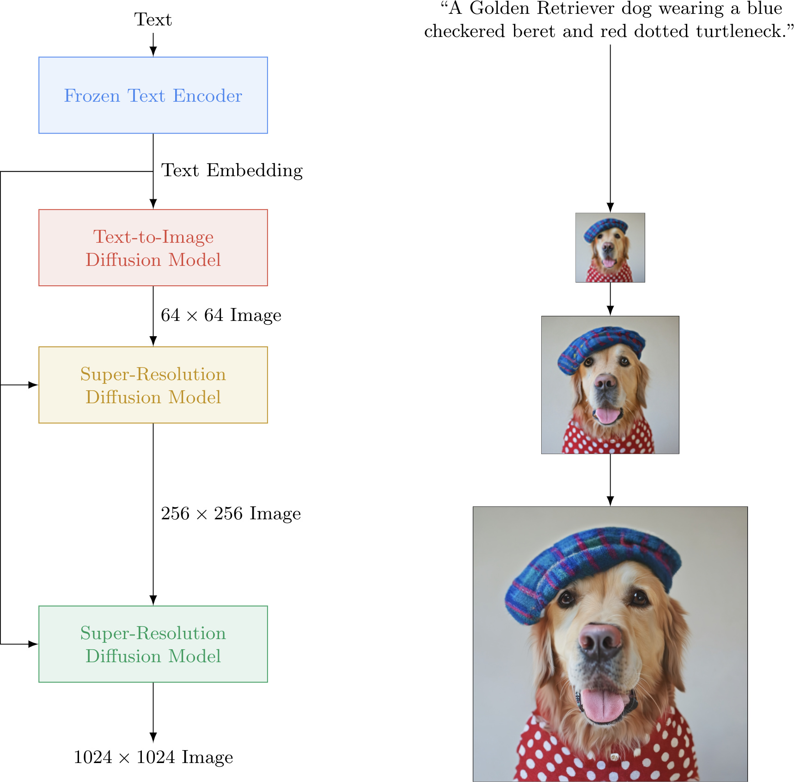

Primers • Diffusion Models
- Background
- Overview
- Introduction
- Advantages
- Definitions
- Diffusion Models: The Theory
- Diffusion models: A Deep Dive
- Types of Diffusion Models
- Denoising Diffusion Probabilistic Models (DDPMs) / Discrete-Time Diffusion Models
- Denoising Diffusion Implicit Models (DDIMs)
- Score-Based Generative Models (SGMs) / Continuous-Time Diffusion Models
- Variational Diffusion Models (VDMs)
- Stochastic Differential Equation (SDE)-Based Models
- Comparative Analysis
- Training
- Model Choices
- Network Architecture: U-Net and Diffusion Transformer (DiT)
- Conditional Diffusion Models
- Classifier-Free Guidance
- Prompting Guidance
- Diffusion Models in PyTorch
- HuggingFace Diffusers
- Implementations
- Gallery
- FAQ
- At a high level, how do diffusion models work? What are some other models that are useful for image generation, and how do they compare to diffusion models?
- What is the difference between DDPM and DDIMs models?
- In diffusion models, there is a forward diffusion process and a reverse diffusion/denoising process. When do you use which during training and inference?
- What are the loss functions used in Diffusion Models?
- Integration with MSE
- What is the Denoising Score Matching Loss in Diffusion models? Provide equation and intuition.
- What does the “stable” in stable diffusion refer to?
- How do you condition a diffusion model to the textual input prompt?
- In the context of diffusion models, what role does cross attention play? How are the \(Q\), \(K\), and \(V\) abstractions modeled for diffusion models?
- How is randomness in the outputs induced in a diffusion model?
- How does the noise schedule work in diffusion models? What are some standard noise schedules?
- Choosing a Noise Schedule
- Recent Papers
- High-Resolution Image Synthesis with Latent Diffusion Models
- Diffusion Model Alignment Using Direct Preference Optimization
- Scalable Diffusion Models with Transformers
- DeepFloyd IF
- PIXART-\(\alpha\): Fast Training of Diffusion Transformer for Photorealistic Text-to-Image Synthesis
- RAPHAEL: Text-to-Image Generation via Large Mixture of Diffusion Paths
- ERNIE-ViLG 2.0: Improving Text-to-Image Diffusion Model with Knowledge-Enhanced Mixture-of-Denoising-Experts
- Imagen Video: High Definition Video Generation with Diffusion Models
- Patch n’ Pack: NaViT, a Vision Transformer for any Aspect Ratio and Resolution
- SDXL: Improving Latent Diffusion Models for High-Resolution Image Synthesis
- Dreamix: Video Diffusion Models are General Video Editors
- Stable Video Diffusion: Scaling Latent Video Diffusion Models to Large Datasets
- Fine-tuning Diffusion Models
- Diffusion Model Alignment
- Further Reading
- The Illustrated Stable Diffusion
- Understanding Diffusion Models: A Unified Perspective
- The Annotated Diffusion Model
- Lilian Weng: What are Diffusion Models?
- Stable Diffusion - What, Why, How?
- How does Stable Diffusion work? – Latent Diffusion Models Explained
- Diffusion Explainer
- Jupyter notebook on the theoretical and implementation aspects of Score-based Generative Models (SGMs)
- References
- Citation
Background
- Generative models have achieved remarkable success in creating high-quality data samples, with three prominent types being Generative Adversarial Networks (GANs), Variational Autoencoders (VAEs), and Flow-based models. Each of these approaches has distinct advantages and limitations. GANs, known for their adversarial training framework, often face challenges such as unstable training and reduced diversity in generated samples. VAEs rely on surrogate loss functions, which may limit the fidelity of outputs. Flow-based models require specialized reversible architectures, adding complexity to their design.
- Diffusion models present a compelling alternative to these traditional methods. Inspired by non-equilibrium thermodynamics, they define a Markov chain to incrementally add random noise to data in a forward process. The model then learns to reverse this diffusion process, reconstructing data samples from the noise. Unlike VAEs or Flow-based models, diffusion models follow a fixed learning procedure and utilize high-dimensional latent variables, matching the dimensionality of the original data.
- The concept of diffusion models for generative tasks was first introduced in Sohl-Dickstein et al., 2015. Significant advancements came later with the contributions of Song et al., 2019 at Stanford University and Ho et al., 2020 at Google Brain, who independently improved the approach and expanded its applicability.
- A helpful visual overview of the different types of generative models, including diffusion models, can be found in this diagram from Lilian Weng’s blog:

- Diffusion models are conceptually simple yet powerful. Their state-of-the-art results, coupled with the absence of adversarial training, have propelled them to prominence. They have proven essential in cutting-edge models for conditional and unconditional generation across various modalities such as images, audio, and video. Examples include GLIDE and DALL-E 2 by OpenAI, Latent Diffusion by the University of Heidelberg, Imagen by Google Brain, and Stable Diffusion by Stability.ai.
- As a relatively new paradigm, diffusion models hold immense potential for further refinement and innovation. Their current success underscores their growing importance in the field of generative modeling.
Overview
- The meteoric rise of diffusion models is one of the biggest developments in Machine Learning in the past several years.
- Diffusion models are generative models which have been gaining significant popularity in the past several years, and for good reason. A handful of seminal papers released in the 2020s alone have shown the world what Diffusion models are capable of, such as beating GANs on image synthesis. Most recently, Diffusion models were used in DALL-E 2, OpenAI’s image generation model (image below generated using DALL-E 2).
- Given the recent wave of success by Diffusion models, many Machine Learning practitioners are surely interested in their inner workings.
- In this primer, we will examine the theoretical foundations of diffusion models, and then demonstrate how to generate images with a diffusion model in PyTorch.
Introduction
- Diffusion probabilistic models (also simply called diffusion models) are generative models, meaning that they are used to generate data similar to the data on which they are trained. As the name suggests, generative models are used to generate new data, for e.g., they can generate new photos of animals that look like real animals whereas discriminative models could tell apart a cat from a dog.
- Fundamentally, diffusion models work by destroying training data through the successive addition of Gaussian noise, and then learning to recover the data by reversing this noising process. In other words, diffusion models are parameterized Markov chains models trained to gradually denoise data. After training, we can use the diffusion model to generate data by simply passing randomly sampled noise through the learned denoising process. In other words, diffusion models undergo the process of transforming a random collection of numbers (the “latents tensor”) into a processed collection of numbers containing the right image information.
- Diffusion Models also go by Diffusion Probabilistic Models, score-based generative models or in some contexts, have been compared to denoising autoencoders owing to similarity in behavior.
- The following diagram shows that diffusion models can be used to generate images from noise (figure modified from source):

- More specifically, a diffusion model is a latent variable model which maps to the latent space using a fixed Markov chain. This chain gradually adds noise to the data in order to obtain the approximate posterior \(q\left(\mathbf{x} 1: T \mid \mathbf{x}_{0}\right)\), where \(\mathbf{x} 1, \ldots, \mathbf{x} T\) are the latent variables with the same dimensionality as \(\mathbf{x}_{0}\). In the figure below, we see such a Markov chain manifested for image data.
- The following diagram (figure modified from source):
- Ultimately, the image is asymptotically transformed to pure Gaussian noise. The goal of training a diffusion model is to learn the reverse process - i.e. training \(p_{\theta}\left(x_{t-1} \mid x_{t}\right)\). By traversing backwards along this chain, we can generate new data, as shown below (figure modified from source).

- Under-the-hood, diffusion Models define a Markov chain of diffusion steps that add random noise to the data and then learn to reverse the diffusion process in order to create the desired data output from the noise. This can be seen in the image below:
- Recall that a Markov chain is a stochastic model that describes a sequence of possible events where the probability of each event only depends on the state of the previous event. Markov chains are used to calculate the probability of an event occurring by considering it as a state transitioning to another state or a state transitioning to the same state as before. The defining characteristic of a Markov chain is that no matter how the process arrived at its present state, the possible future states are fixed.
- Key takeaway
- In a nutshell, diffusion models are constructed by first describing a procedure for gradually turning data into noise, and then training a neural network that learns to invert this procedure step-by-step. Each of these steps consists of taking a noisy input and making it slightly less noisy, by filling in some of the information obscured by the noise. If you start from pure noise and do this enough times, it turns out you can generate data this way! (source)
Advantages
- Diffusion probabilistic models are latent variable models capable to synthesize high quality images. As mentioned above, research into diffusion models has exploded in recent years. Inspired by non-equilibrium thermodynamics, diffusion models currently produce State-of-the-Art image quality, examples of which can be seen below (figure adapted from source):
- Beyond cutting-edge image quality, diffusion models come with a host of other benefits, including not requiring adversarial training. The difficulties of adversarial training are well-documented; and, in cases where non-adversarial alternatives exist with comparable performance and training efficiency, it is usually best to utilize them. On the topic of training efficiency, diffusion models also have the added benefits of scalability and parallelizability.
- While diffusion models almost seem to be producing results out of thin air, there are a lot of careful and interesting mathematical choices and details that provide the foundation for these results, and best practices are still evolving in the literature. Let’s take a look at the mathematical theory underpinning diffusion models in more detail now.
- Their performance is, allegedly, superior to recent state-of-the-art generative models like Generative Adversarial Networks (GANs) and Variational Autoencoders (VAEs) in most cases.
Definitions
Diffusion Models
- Diffusion models are neural models that model \(p_{\theta}\left(\mathbf{x}_{t-1} \mid \mathbf{x}_{t}\right)\) and are trained end-to-end to denoise a noisy input to a continuous output such as an image/audio (similar to how GANs generate continuous outputs). Examples: UNet, Conditioned UNet, 3D UNet, Transformer UNet.
- The following figure from the DDPM paper shows the process of a diffusion model:

Schedulers
- Algorithm class for both inference and training. The class provides functionality to compute previous image according to alpha, beta schedule as well as predict noise for training. Examples: DDPM, DDIMs, PNDM, DEIS.
- The figure below from the DDPM paper shows the sampling and training algorithms:
Sampling and training algorithms
- Diffusion Pipeline: End-to-end pipeline that includes multiple diffusion models, possible text encoders, super-resolution model (for high-res image generation, in case of Imagen), etc.
- Examples: GLIDE, Latent-Diffusion, Imagen, DALL-E 2.
- The figure below from the Imagen paper shows the overall flow of the model.

Diffusion Models: The Theory
-
In this section, we explore the theoretical foundation of diffusion models:
-
Markov Chain Representation: A diffusion model is parameterized as a Markov chain, implying that the latent variables \(x_1, \ldots, x_T\) depend solely on the adjacent time-step (preceding or following).
-
Gaussian Transition Distributions: The transitions in the Markov chain are modeled as Gaussian distributions. The forward process employs a variance schedule, while the parameters for the reverse process are learned.
-
Asymptotic Distribution: The diffusion process ensures that \(x_T\) converges asymptotically to an isotropic Gaussian distribution for sufficiently large \(T\).
-
Variance Scheduling: While the variance schedule in our implementation is fixed, it can also be learned. For fixed schedules, using a geometric progression often yields better results compared to a linear progression. Regardless of the approach, the variances typically increase over time within the series (\(\beta_i < \beta_j\) for \(i < j\)).
-
Architectural Flexibility: Diffusion models are highly versatile, accommodating any architecture with matching input and output dimensionalities. Commonly, U-Net-like architectures are utilized in implementations.
-
Training Objective: The training goal is to maximize the likelihood of the data, which involves optimizing model parameters to minimize the variational upper bound of the negative log likelihood.
-
Role of KL Divergences: Owing to the Markov assumption, most terms in the objective function can be expressed as KL divergences. These are tractable for computation because the model assumes Gaussian distributions, thereby avoiding the need for Monte Carlo approximations.
-
Simplified Objective: Training is most stable and effective when a simplified objective function is used to predict the noise component of a given latent variable.
-
Discrete Decoding: In the final step of the reverse diffusion process, a discrete decoder is employed to compute log likelihoods across pixel values.
-
Diffusion models: A Deep Dive
General Overview
- Diffusion Models are a latent variable model that maps the latent space using the Markov chain. They essentially are made up of neural networks that learn to gradually de-noise data.
- Note: Latent variable models aim to model the probability distribution with latent variables. Latent variables are a transformation of the data points into a continuous lower-dimensional space. (source)
- Additionally, the latent space is simply a representation of compressed data in which similar data points are closer together in space.
- Latent space is useful for learning data features and for finding simpler representations of data for analysis.
- Diffusion models consist of two processes: a predefined forward diffusion and a learned reverse de-noising diffusion process.
- In the image below, we can see the Markov chain working towards image generation. It represents the first process of forward diffusion.
- The forward diffusion process \(q\) of our choosing, gradually adds Gaussian noise to an image, until you end up with pure noise.
- Next, the image is asymptotically transformed to just Gaussian noise. The goal of training a diffusion model is to learn the reverse process.
- The second process below is the learned reverse de-noising diffusion process \(p_\theta\). Here, a neural network is trained to gradually de-noise an image starting from pure noise, until you end up with an actual image.
- Thus, we traverse backwards along this chain to generate the new data as seen below:
- Both the forward and reverse process (both indexed with \(t\)) continue for a duration of finite time steps \(T\) (the DDPM authors use \(T\) =1000).
- You will start off with \(t = 0\) where you will sample a real image \(x_0\) from your data distribution.
- A quick example is say you have an image of a cat from ImageNet dataset.
- You will then continue with the forward process and sample some noise from a Gaussian distribution at each time step \(t\).
- This will be added to the image of the previous time step.
- Given a sufficiently large \(T\) and a continuous process of adding noise at each time step, you will end up with \(t = T\).
-
This is also called an isotropic Gaussian distribution.
- Below is the high-level overview of how everything runs under the hood:
- we take a random sample \(x_0\) from the real unknown and complex data distribution \(q(x_0)\)
- we sample a noise level \(t\) uniformly between \(1\) and \(T\) (i.e., a random time step)
- we sample some noise from a Gaussian distribution and corrupt the input by this noise at level \(t\) (using the nice property defined above)
- the neural network is trained to predict this noise based on the corrupted image \(x_t\) (i.e. noise applied on \(x_0\) based on known schedule \(\beta_t\)) In reality, all of this is done on batches of data, as one uses stochastic gradient descent to optimize neural networks.
The Math Under-the-hood
-
As mentioned above, a diffusion model consists of a forward process (or diffusion process), in which a datum (generally an image) is progressively noised, and a reverse process (or reverse diffusion process), in which noise is transformed back into a sample from the target distribution.
-
The sampling chain transitions in the forward process can be set to conditional Gaussians when the noise level is sufficiently low. Combining this fact with the Markov assumption leads to a simple parameterization of the forward process:
\[q\left(\mathbf{x}_{1: T} \mid \mathbf{x}_{0}\right):=\prod_{t=1}^{T} q\left(\mathbf{x}_{t} \mid \mathbf{x}_{t-1}\right):=\prod_{t=1}^{T} \mathcal{N}\left(\mathbf{x}_{t} ; \sqrt{1-\beta_{t}} \mathbf{x}_{t-1}, \beta_{t} \mathbf{I}\right)\]- where \(\beta_1, \ldots, \beta_T\) is a variance schedule (either learned or fixed) which, if well-behaved, ensures that \(x_T\) is nearly an isotropic Gaussian for sufficiently large \(T\).
-
Given the Markov assumption, the joint distribution of the latent variables is the product of the Gaussian conditional chain transitions (figure modified from source).

-
As mentioned previously, the “magic” of diffusion models comes in the reverse process. During training, the model learns to reverse this diffusion process in order to generate new data. Starting with the pure Gaussian noise \(p(\mathbf{x} T):=\mathcal{N}\left(\mathbf{x}_{T}, \mathbf{0}, \mathbf{I}\right)\), the model learns the joint distribution \(p \theta(\mathbf{x} 0: T)\) as,
\[p_{\theta}\left(\mathbf{x}_{0: T}\right):=p\left(\mathbf{x}_{T}\right) \prod_{t=1}^{T} p_{\theta}\left(\mathbf{x}_{t-1} \mid \mathbf{x}_{t}\right):=p\left(\mathbf{x}_{T}\right) \prod_{t=1}^{T} \mathcal{N}\left(\mathbf{x}_{t-1} ; \boldsymbol{\mu}_{\theta}\left(\mathbf{x}_{t}, t\right), \boldsymbol{\Sigma}_{\theta}\left(\mathbf{x}_{t}, t\right)\right)\]- where the time-dependent parameters of the Gaussian transitions are learned. Note in particular that the Markov formulation asserts that a given reverse diffusion transition distribution depends only on the previous timestep (or following timestep, depending on how you look at it):
Diffusion models are a class of generative models that define a forward process that gradually adds noise to data, and a reverse process that learns to denoise it step-by-step to generate new data. Below is an enhanced explanation of key types of diffusion models, including DDPM and DDIMs, with implementation details and references to the original papers where each model type was proposed.
Types of Diffusion Models
- Diffusion models are a class of generative models that define a forward process that gradually adds noise to data, and a reverse process that learns to denoise it step-by-step to generate new data. Below is an enhanced explanation of key types of diffusion models, including DDPM, DDIMs, SGMs, VDMs, and SDE-based models, with implementation details and their pros and cons.
Denoising Diffusion Probabilistic Models (DDPMs) / Discrete-Time Diffusion Models
- Denoising Diffusion Probabilistic Models (DDPMs) were proposed in the paper “Denoising Diffusion Probabilistic Models” by Jonathan Ho, Ajay Jain, and Pieter Abbeel (2020).
- DDPMs are a foundational type of diffusion model introduced by Jonathan Ho, Ajay Jain, and Pieter Abbeel in 2020. They consist of two processes: a forward process (diffusion) that adds noise to data, and a reverse process (denoising) that learns to remove this noise to generate new data samples.
Implementation Details
-
Forward Process:
- The forward process gradually corrupts the data by adding Gaussian noise over a series of timesteps \(t = 1, \ldots, T\). Given data \(x_0\), the noisy version at timestep \(t\) is given by:
- where \(\beta_t\) are variance schedule parameters controlling the noise level at each timestep. This process ensures that as \(t\) increases, the data becomes increasingly noisy, eventually resembling pure Gaussian noise.
-
Reverse Process:
The reverse process aims to denoise the data by learning to reverse the forward process. The model \(p_\theta(x_{t-1} \| x_t)\) is trained to approximate:
\[p_\theta(x_{t-1} \| x_t) = \mathcal{N}(x_{t-1}; \mu_\theta(x_t, t), \sigma_t^2 I)\]- where \(\mu_\theta\) is the mean predicted by a neural network, and \(\sigma_t^2\) is a fixed variance. The objective is to minimize the variational bound, typically using a simplified loss function:
- where \(\epsilon\) is sampled from a standard normal distribution, and \(\epsilon_\theta\) is the noise predicted by the model. This loss function encourages the model to accurately predict the noise added during the forward process, facilitating effective denoising during sampling.
-
Sampling:
- The denoising process starts from pure noise \(x_T \sim \mathcal{N}(0, I)\) and gradually generates a sample \(x_0\) by reversing the noise addition steps. This iterative process involves sampling from the learned reverse distributions \(p_\theta(x_{t-1} \| x_t)\) for \(t = T, \ldots, 1\), ultimately producing a data sample that resembles the original data distribution.
Pros
- Strong theoretical foundation with a clear probabilistic framework.
- Capable of generating high-quality samples.
Cons
- Sampling can be computationally intensive due to the large number of required steps.
Denoising Diffusion Implicit Models (DDIMs)
- Denoising Diffusion Implicit Models (DDIMs) were proposed in the paper “Denoising Diffusion Implicit Models” by Jiaming Song, Chenlin Meng, and Stefano Ermon (2020). DDIMs are an extension of DDPM that allow for deterministic sampling, which can significantly speed up the generation process.
Implementation Details
- Forward Process:
- Similar to DDPMs, the forward process in DDIMs involves adding noise to the data. However, the key difference lies in the parameterization of the reverse process, which allows for a deterministic mapping during sampling.
- Reverse Process:
- DDIMs modifies the reverse process to make it deterministic. Instead of learning the reverse transition probabilities, DDIMs defines a deterministic mapping:
- where \(\alpha_t\) is a function of the noise schedule \(\beta_t\). This deterministic approach allows for a fixed trajectory in the latent space, making the process faster and more efficient.
- Sampling:
- The sampling process in DDIMs can be interpreted as a non-Markovian process that generates samples in fewer steps compared to DDPM, offering a trade-off between sample quality and computational efficiency. By eliminating the stochasticity in the reverse process, DDIMs enables faster sampling while maintaining high-quality sample generation.
Pros
- Faster sampling compared to DDPM due to deterministic processes.
- Offers a trade-off between sample quality and computational efficiency.
Cons
- May require careful tuning to balance speed and sample quality.
Score-Based Generative Models (SGMs) / Continuous-Time Diffusion Models
- Score-Based Generative Models (SGMs) leverage the score function of the data distribution to guide the denoising process, rather than modeling the direct transition probabilities between noisy and clean samples. This approach was introduced in the paper “Generative Modeling by Estimating Gradients of the Data Distribution” by Yang Song and Stefano Ermon (2019).
Implementation Details
- Neural Network Architecture:
- SGMs typically employ U-Net architectures due to their efficacy in capturing multi-scale features, which is crucial for modeling the score function across different noise levels.
- Noise Conditional Score Network (NCSN):
-
The neural network is trained to predict the score function conditioned on the noise level, denoted as \(s_\theta(x_t, \sigma_t)\), where:
\[s_\theta(x_t, \sigma_t) = \nabla_{x_t} \log p(x_t)\] -
This conditioning allows the model to handle varying degrees of noise during the denoising process.
-
- Training Objective:
-
The model is trained using a denoising score matching objective, which minimizes:
\[L = \mathbb{E}_{x_0, t, \epsilon} \left[ \lambda(t) \| s_\theta(x_t, t) - \nabla_{x_t} \log p(x_t \| x_0) \|^2 \right]\]- where \(\lambda(t)\) is a weighting function controlling the importance of different noise levels.
-
- Sampling Procedure:
-
Sampling from SGMs involves simulating the reverse diffusion process using Langevin dynamics:
\[x_{t-1} = x_t + \eta s_\theta(x_t, t) + \sqrt{2\eta} z_t\]- where \(\eta\) is the step size and \(z_t \sim \mathcal{N}(0, I)\) is Gaussian noise.
-
Pros
- SGMs can offer flexible sampling methods, including deterministic and stochastic options.
- These models effectively capture complex data distributions.
- They generalize well across different data types.
Cons
- The sampling process can be slow due to iterative Langevin steps.
- Training requires accurate estimation of the score function across different noise levels.
Variational Diffusion Models (VDMs)
- Variational Diffusion Models (VDMs) integrate variational inference with diffusion processes to enhance flexibility and sample quality. This approach was introduced in the paper “High-Resolution Image Synthesis with Latent Diffusion Models” by Robin Rombach et al. (2022).
Implementation Details
-
Latent Variable Introduction:
- VDMs integrate latent variables \(z\) into the diffusion framework, combining the strengths of Variational Autoencoders (VAEs) and diffusion processes. The generative process includes:
- Variational Inference:
- To approximate the intractable posterior \(p(z \| x)\), VDMs employ a variational approximation \(q_\phi(z \| x)\), and the model is trained by maximizing the Evidence Lower Bound (ELBO):
- Diffusion Process in Latent Space:
- The forward diffusion process in VDMs gradually corrupts the latent variables:
- The reverse process then learns to denoise these latent variables, effectively modeling the data distribution in the latent space.
-
Combining VAE and Diffusion:
- By integrating the VAE framework with diffusion processes, VDMs leverage the latent variable structure to guide the denoising process. This combination enhances the flexibility and expressiveness of the model, allowing it to capture complex data distributions more effectively.
Pros
- Latent diffusion significantly reduces computational costs compared to pixel-based diffusion.
- Combines the advantages of VAEs and diffusion models for improved representation learning.
- More efficient in generating high-resolution images.
Cons
- Training requires careful balancing of the latent space structure.
- Requires additional encoding-decoding steps.
Stochastic Differential Equation (SDE)-Based Models
- Stochastic Differential Equation (SDE)-based diffusion models generalize the diffusion process to a continuous-time framework. This approach was introduced in the paper “Score-Based Generative Modeling through Stochastic Differential Equations” by Yang Song et al. (2021).
Implementation Details
- Continuous-Time Formulation:
- SDE-based models generalize the discrete-time diffusion process to continuous time using an SDE:
- where \(W\) is a Wiener process, and \(f(x, t)\) and \(g(t)\) are drift and diffusion coefficients, respectively.
- Forward and Reverse SDEs:
- The forward SDE describes the noise addition:
- The reverse-time SDE is used for sampling:
- Training via Score Matching:
- The score function \(s_\theta(x, t)\) is learned via score matching:
- Sampling with Numerical Solvers:
- Sampling from SDE-based models involves solving the reverse-time SDE using numerical methods such as Euler-Maruyama:
- where \(z_t \sim \mathcal{N}(0, I)\).
Pros
- SDE-based models provide a continuous-time formulation, leading to more flexibility in training and sampling.
- They can generate high-quality samples efficiently.
- The framework is theoretically robust and generalizes other diffusion-based methods.
Cons
- Requires specialized solvers for numerical integration.
- Computational cost can be high for complex models.
Comparative Analysis
- The table below offers a detailed comparison highlights the strengths and trade-offs among different diffusion model variants, offering insights into their practical applications and limitations.
| Model Type | Strengths | Weaknesses | Notable Features |
|---|---|---|---|
| DDPM | Strong theoretical foundation, high-quality samples | Slow sampling due to large step count | Probabilistic denoising framework |
| DDIMs | Faster sampling than DDPM, deterministic | Requires careful tuning | Reduces step count for efficient generation |
| SGMs | Flexible sampling, well-suited for complex data | Slow due to iterative Langevin steps | Uses score function for denoising |
| VDMs | Efficient high-resolution image generation | Complexity in training and inference | Integrates VAEs with diffusion |
| SDE-Based | Continuous-time, flexible framework | Requires numerical solvers, computationally expensive | Extends diffusion models into continuous-time |
Training
- A diffusion model is trained by finding the reverse Markov transitions that maximize the likelihood of the training data. In practice, training equivalently consists of minimizing the variational upper bound on the negative log likelihood.
-
As a notation detail, note that \(L_{v l b}\) is technically an upper bound (the negative of the ELBO) which we are trying to minimize, but we refer to it as \(L_{v l b}\) for consistency with the literature.
-
We seek to rewrite the \(L_{v l b}\) in terms of Kullback-Leibler (KL) Divergences. The KL Divergence is an asymmetric statistical distance measure of how much one probability distribution \(P\) differs from a reference distribution \(Q\). We are interested in formulating \(L_{v l b}\) in terms of \(KL\) divergences because the transition distributions in our Markov chain are Gaussians, and the KL divergence between Gaussians has a closed form.
Recap: KL Divergence
-
The mathematical form of the \(\mathrm{KL}\) divergence for continuous distributions is,
\[D_{\mathrm{KL}}(P \| Q)=\int_{-\infty}^{\infty} p(x) \log \left(\frac{p(x)}{q(x)}\right) d x\]- Note that the double bars in the above equation indicate that the function is not symmetric with respect to its arguments.
-
Below you can see the \(K L\) divergence of a varying distribution \(P\) (blue) from a reference distribution \(Q\) (red). The green curve indicates the function within the integral in the definition for the \(\mathrm{KL}\) divergence above, and the total area under the curve represents the value of the KL divergence of \(P\) from \(Q\) at any given moment, a value which is also displayed numerically.
Casting \(L_{v l b}\) in Terms of KL Divergences
-
As mentioned previously, it is possible[1] to rewrite \(L v l b\) almost completely in terms of KL divergences:
\[L_{v l b}=L_{0}+L_{1}+\ldots+L_{T-1}+L_{T}\]- where, \(\begin{gathered} L_{0}=-\log p_{\theta}\left(x_{0} \mid x_{1}\right) \\ L_{t-1}=D_{K L}\left(q\left(x_{t-1} \mid x_{t}, x_{0}\right) \| p_{\theta}\left(x_{t-1} \mid x_{t}\right)\right) \\ L_{T}=D_{K L}\left(q\left(x_{T} \mid x_{0}\right) \| p\left(x_{T}\right)\right) \end{gathered}\)
-
Conditioning the forward process posterior on \(x_{0}\) in \(L_{t-1}\) results in a tractable form that leads to all KL divergences being comparisons between Gaussians. This means that the divergences can be exactly calculated with closed-form expressions rather than with Monte Carlo estimates.
Model Choices
- With the mathematical foundation for our objective function established, we now need to make several choices regarding how our diffusion model will be implemented. For the forward process, the only choice required is defining the variance schedule, the values of which are generally increasing during the forward process.
- For the reverse process, we much choose the Gaussian distribution parameterization / model architecture(s). Note the high degree of flexibility that Diffusion models afford - the only requirement on our architecture is that its input and output have the same dimensionality. We will explore the details of these choices in more detail below.
Forward Process and \(L_{T}\)
- As noted above, regarding the forward process, we must define the variance schedule. In particular, we set them to be time-dependent constants, ignoring the fact that they can be learned. For example, per Denoising Diffusion Probabilistic models, a linear schedule from \(\beta_{1}=10^{-4}\) to \(\beta_{T}=0.2\) might be used, or perhaps a geometric series. Regardless of the particular values chosen, the fact that the variance schedule is fixed results in \(L_{T}\) becoming a constant with respect to our set of learnable parameters, allowing us to ignore it as far as training is concerned.
Reverse Process and \(L_{1: T-1}\)
- Now we discuss the choices required in defining the reverse process. Recall from above we defined the reverse Markov transitions as a Gaussian:
- We must now define the functional forms of \(\mu_{\theta}\) or \(\Sigma_{\theta}\). While there are more complicated ways to parameterize \(\boldsymbol{\Sigma}_\theta\), we simply set,
- That is, we assume that the multivariate Gaussian is a product of independent gaussians with identical variance, a variance value which can change with time. We set these variances to be equivalent to our forward process variance schedule.
-
Given this new formulation of \(\Sigma_{\theta_{1}}\), we have
\[p_{\theta}\left(\mathbf{x}_{t-1} \mid \mathbf{x}_{t}\right):=\mathcal{N}\left(\mathbf{x}_{t-1} ; \boldsymbol{\mu}_{\theta}\left(\mathbf{x}_{t}, t\right), \mathbf{\Sigma}_{\theta}\left(\mathbf{x}_{t}, t\right):=\mathcal{N}\left(\mathbf{x}_{t-1} ; \boldsymbol{\mu}_{\theta}\left(\mathbf{x}_{t}, t\right), \sigma_{t}^{2} \mathbf{I}\right)\right.\]- which allows us to transform,
- to,
- where the first term in the difference is a linear combination of \(x t\) and \(x_{0}\) that depends on the variance schedule \(\beta_{t}\). The exact form of this function is not relevant for our purposes, but it can be found in Denoising Diffusion Probabilistic models. The significance of the above proportion is that the most straightforward parameterization of \(\mu_{\theta}\) simply predicts the diffusion posterior mean. Importantly, the authors of Denoising Diffusion Probabilistic models actually found that training \(\mu \theta\) to predict the noise component at any given timestep yields better results. In particular, let
- where, \(\alpha_{t}:=1-\beta_{t} \quad\) and \(\quad \bar{\alpha}_{t}:=\prod_{s=1}^{t} \alpha_{s}\).
- This leads to the following alternative loss function, which the authors of Denoising Diffusion Probabilistic models found to lead to more stable training and better results:
- The authors of Denoising Diffusion Probabilistic models also note connections of this formulation of Diffusion models to score-matching generative models based on Langevin dynamics. Indeed, it appears that Diffusion models and ScoreBased models may be two sides of the same coin, akin to the independent and concurrent development of wave-based quantum mechanics and matrix-based quantum mechanics revealing two equivalent formulations of the same phenomena.
Network Architecture: U-Net and Diffusion Transformer (DiT)
- Let’s dive deep into the network architecture of a diffusion model. Note that the only requirement for the model is that its input and output dimensionality are identical. Specifically, the neural network needs to take in a noised image at a particular time step and return the predicted noise. The predicted noise here is a tensor that has the same size and resolution as the input image. Thus, these neural networks take in tensors and return tensors of the same shape.
- Given this restriction, it is perhaps unsurprising that image diffusion models are commonly implemented with U-Net-like architectures. Put simply, U-Net-based diffusion models are the most prevalent type of diffusion models.
- There are primarily two types of architectures used in diffusion models: U-Net and Diffusion Transformer (DiT). U-Net-based architectures are highly effective for image-related tasks due to their spatially structured convolutional operations, while Diffusion Transformers leverage self-attention mechanisms to capture long-range dependencies, making them versatile for various data types.
U-Net-Based Diffusion Models
-
The neural net architecture that the authors of DDPM used was U-Net. Here are the key aspects of the U-Net architecture:
- Encoder-Decoder Structure:
- The network consists of a “bottleneck” layer in the middle of its architecture between the encoder and decoder.
- The encoder first encodes an image into a smaller hidden representation called the “bottleneck”.
- The decoder then decodes that hidden representation back into an actual image.
- Bottleneck Layer:
- This bottleneck ensures the network learns only the most important information.
- It compresses the input data to focus on essential features, facilitating effective denoising and reconstruction.
- Skip Connections:
- U-Net architecture includes skip connections between corresponding layers of the encoder and decoder.
- These connections help retain fine-grained details lost during downsampling in the encoder and reintroduce them during upsampling in the decoder.
- Encoder-Decoder Structure:
Diffusion Transformer (DiT)
-
In contrast to U-Net-based diffusion models, Diffusion Transformers (DiT), proposed in Scalable Diffusion Models with Transformers, employ a transformer-based architecture, characterized by self-attention mechanisms. Here are the key features of DiT:
- Transformer-Based Architecture:
- Utilizes layers of multi-head self-attention and feed-forward networks.
- Captures long-range dependencies and complex interactions within the data.
- Sequential and Attention Mechanisms:
- Handles data as sequences, leveraging self-attention to weigh the importance of different parts of the input dynamically.
- Well-suited for tasks requiring the understanding of relationships over long distances in the input data.
- Can be adapted for various data types, not just images, due to its flexibility in data representation.
- Transformer-Based Architecture:
Comparison
Model Complexity and Parameters
- DiT:
- Generally has a higher model complexity due to the quadratic scaling of self-attention with the input size.
- Requires significant computational resources for handling large sequences or high-resolution data.
- U-Net:
- Model complexity is more manageable, as convolutional operations scale linearly with input size.
- Easier to train and requires fewer computational resources compared to transformers, especially for high-resolution image data.
Training and Optimization
- DiT:
- Training can be more challenging due to the complexity of the attention mechanisms and the need for large-scale data to fully leverage its capabilities.
- Optimization techniques like learning rate schedules, gradient clipping, and advanced initialization methods are often necessary.
- U-Net:
- Training is generally more straightforward due to the well-understood nature of convolutional operations and spatial processing.
- Beneficial for applications with limited computational resources or where rapid prototyping and iteration are required.
Reverse Process of U-Net-based Diffusion Models
- The path along the reverse process consists of many transformations under continuous conditional Gaussian distributions. At the end of the reverse process, recall that we are trying to produce an image, which is composed of integer pixel values. Therefore, we must devise a way to obtain discrete (log) likelihoods for each possible pixel value across all pixels.
-
The way that this is done is by setting the last transition in the reverse diffusion chain to an independent discrete decoder. To determine the likelihood of a given image \(x_0\) given \(x_{1}\), we first impose independence between the data dimensions:
\[p_{\theta}\left(x_{0} \mid x_{1}\right)=\prod_{i=1}^{D} p_{\theta}\left(x_{0}^{i} \mid x_{1}^{i}\right)\]- where \(D\) is the dimensionality of the data and the superscript \(i\) indicates the extraction of one coordinate. The goal now is to determine how likely each integer value is for a given pixel given the distribution across possible values for the corresponding pixel in the slightly noised image at time \(t=1\) :
- where the pixel distributions for \(t=1\) are derived from the below multivariate Gaussian whose diagonal covariance matrix allows us to split the distribution into a product of univariate Gaussians, one for each dimension of the data:
-
We assume that the images consist of integers in \(0,1, \ldots, 255\) (as standard RGB images do) which have been scaled linearly to \([-1,1]\). We then break down the real line into small “buckets”, where, for a given scaled pixel value \(x\), the bucket for that range is \([x-1 / 255, x+1 / 255]\). The probability of a pixel value \(x\), given the univariate Gaussian distribution of the corresponding pixel in \(x_1\), is the area under that univariate Gaussian distribution within the bucket centered at \(x\).
- The figure below shows the area for each of these buckets with their probabilities for a mean-0 Gaussian which, in this context, corresponds to a distribution with an average pixel value of \(\frac{255}{2}\) (half brightness). The red curve represents the distribution of a specific pixel in the \(t=1\) image, and the areas give the probability of the corresponding pixel value in the \(t=0\) image.
-
Technical Note: The first and final buckets extend out to -inf and +inf to preserve total probability.
-
Given a \(t=0\) pixel value for each pixel, the value of \(p_{\theta}\left(x_{0} \mid x_{1}\right)\) is simply their product. Succinctly, this process is succinctly encapsulated by the following equation:
\[p_{\theta}\left(x_{0} \mid x_{1}\right)=\prod_{i=1}^{D} p_{\theta}\left(x_{0}^{i} \mid x_{1}^{i}\right)=\prod_{i=1}^{D} \int_{\delta_{-}\left(x_{0}^{i}\right)}^{\delta_{+}\left(x_{0}^{i}\right)} \mathcal{N}\left(x ; \mu_{\theta}^{i}\left(x_{1}, 1\right), \sigma_{1}^{2}\right) d x\]- where,
- and
-
Given this equation for \(p_{\theta}\left(x_{0} \mid x_{1}\right)\), we can calculate the final term of \(L_{v l b}\) which is not formulated as a \(\mathrm{KL}\) Divergence:
\[L_{0}=-\log p_{\theta}\left(x_{0} \mid x_{1}\right)\]
Reverse Process of DiT-based Diffusion Models
-
In DiT-based diffusion models, the reverse process involves a series of denoising steps utilizing transformer architectures, specifically designed to capture the long-range dependencies in the data. Unlike U-Net-based models, which primarily leverage convolutional operations, DiT-based models employ self-attention mechanisms to model the interactions between different parts of the image more effectively.
-
The reverse process starts with a highly noisy image and progressively refines it through a sequence of transformer blocks. At each timestep, the model predicts the noise component that needs to be subtracted from the current noisy image to move closer to the original image distribution. This iterative process can be described as follows:
-
Input Representation: The noisy image at each timestep is first encoded into a latent representation using an initial linear projection layer. This encoded representation serves as the input to the transformer blocks.
-
Transformer Blocks: Each transformer block consists of multi-head self-attention layers followed by feed-forward networks. The self-attention mechanism allows the model to focus on different parts of the image, capturing global context and dependencies. The feed-forward networks further process this information to refine the noise prediction.
-
Noise Prediction: At each timestep, the output of the transformer blocks is used to predict the noise present in the current image. This predicted noise is then subtracted from the current noisy image to obtain a less noisy version of the image.
-
Iterative Denoising: This process is repeated iteratively, with each step producing a progressively denoised image. The final image, after all the steps, is expected to closely match the original image distribution.
-
-
The objective function for DiT-based models is similar to that of U-Net-based models, aiming to minimize the difference between the predicted and actual noise components. The overall loss function can be expressed as:
\[L_{\text {DiT}}(\theta):=\mathbb{E}_{t, \mathbf{x}_{0}, \epsilon}\left[\left\|\epsilon-\epsilon_{\theta}\left(\mathbf{x}_{t}, t\right)\right\|^{2}\right]\] -
Here, \(\mathbf{x}_{t}\) represents the noisy image at timestep \(t\), and \(\epsilon_{\theta}\) denotes the noise predicted by the transformer-based model. By minimizing this loss, the model learns to accurately predict the noise at each timestep, leading to high-quality image generation through the reverse diffusion process.
Final Objective
- As mentioned in the last section, the authors of Denoising Diffusion Probabilistic models found that predicting the noise component of an image at a given timestep produced the best results. Ultimately, they use the following objective:
- The training and sampling algorithms for our diffusion model therefore can be succinctly captured in the below table (from source):
Summary
- In summary, U-Net-based diffusion models are the most prevalent type of diffusion models, particularly effective for image-related tasks due to their spatially structured convolutional architecture. They are simpler to train and computationally more efficient. The reverse process in U-Net-based models involves many transformations under continuous conditional Gaussian distributions and concludes with an independent discrete decoder to determine pixel values.
- On the other hand, Diffusion Transformers (DiT) leverage the power of transformers to handle a variety of data types, capturing long-range dependencies through attention mechanisms. They utilize a series of denoising steps with transformer blocks, employing self-attention mechanisms to effectively model interactions within the data. However, DiT models are more complex and resource-intensive. The reverse process in DiT-based models involves iterative denoising steps using transformer blocks to progressively refine the noisy image.
- The choice between these models depends on the specific requirements of the task, the nature of the data, and the available computational resources.
Conditional Diffusion Models
- Conditional Diffusion Models (CDMs) are an extension of diffusion probabilistic models, where the generation process is conditioned on auxiliary information. This conditioning allows for more structured and controlled synthesis, enabling models to produce outputs that adhere to specific constraints or descriptions.
- Conditioning in diffusion models can be applied using various inputs, such as text (e.g., CLIP embeddings, transformers) or visual data (e.g., images, segmentation maps, depth maps). These inputs influence both the theoretical underpinnings and practical implementations of the models, enhancing their ability to generate outputs aligned with user-defined specifications.
- Early diffusion models relied on simple concatenation techniques for conditioning. However, modern architectures have adopted more sophisticated methods like cross-attention mechanisms, which significantly improve guidance effectiveness. Additionally, techniques such as classifier-free guidance and feature modulation further refine controllability, allowing models to better interpret conditioning signals. These advancements make CDMs powerful tools for diverse tasks, including text-to-image synthesis and guided image manipulation.
Conditioning Mechanisms
-
Diffusion models, which iteratively denoise a Gaussian noise sample to generate an image, can be conditioned by modifying either the forward diffusion process, the reverse process, or both. Below are the primary methods used for conditioning:
- Concatenation: Directly concatenating conditioning information to the input (e.g., concatenating a text embedding or image feature map to the input image tensor). This was widely used in earlier models such as SR3 (Saharia et al., 2021) and Palette (Saharia et al., 2022).
- Cross-Attention: Using a transformer-based cross-attention mechanism to modulate the noise prediction process. This is commonly used in modern models like Imagen (Saharia et al., 2022) and Stable Diffusion (Rombach et al., 2022).
- Adaptive Normalization (AdaGN, AdaIN): Using conditioning information to modulate the mean and variance of intermediate activations.
- Classifier Guidance: Using an external classifier to guide the reverse diffusion process.
- Score-Based Guidance: Modifying the score function based on conditioning information.
-
Below, we describe how these approaches work mathematically and their implementations.
Text Conditioning in Diffusion Models
- Text conditioning in diffusion models typically involves leveraging text encoders such as CLIP, T5, or BERT to obtain a text embedding, which is then integrated into the diffusion model’s denoising network.
Encoding Textual Information
-
A text encoder extracts a fixed-length embedding from an input text description. Suppose the input text is denoted as \(T\), the text encoder \(E_{text}\) produces an embedding:
\[z_T = E_{text}(T) \in \mathbb{R}^{d_{text}}\]- where \(z_T\) is the resulting embedding vector.
Concatenation vs. Cross-Attention Conditioning
- Earlier models such as SR3 (Saharia et al., 2021) and Palette (Saharia et al., 2022) used direct concatenation of conditioning inputs with noise latents. However, modern models like Stable Diffusion and Imagen rely on cross-attention for more expressive conditioning.
Cross-Attention
-
A common method for integrating \(z_T\) into the U-Net-based denoiser is via cross-attention. If \(f_l\) represents the feature map at layer \(l\) of the U-Net, attention-modulated features are computed as:
\[\text{Attention}(Q, K, V) = \text{softmax}\left( \frac{Q K^T}{\sqrt{d}} \right) V,\]- where \(Q = W_Q f_l, \quad K = W_K z_T, \quad V = W_V z_T.\)
-
This allows the model to attend to relevant text features while generating an image.
Implementation Details (PyTorch)
class CrossAttention(nn.Module):
def __init__(self, dim, context_dim):
super().__init__()
self.to_q = nn.Linear(dim, dim)
self.to_k = nn.Linear(context_dim, dim)
self.to_v = nn.Linear(context_dim, dim)
self.scale = dim ** -0.5
def forward(self, x, context):
q = self.to_q(x)
k = self.to_k(context)
v = self.to_v(context)
attn = torch.einsum('b i d, b j d -> b i j', q, k) * self.scale
attn = attn.softmax(dim=-1)
out = torch.einsum('b i j, b j d -> b i d', attn, v)
return out
Visual Conditioning in Diffusion Models
- Visual conditioning can be applied using images, segmentation maps, edge maps, or depth maps as conditioning inputs.
Concatenation-Based Conditioning
- A simple way to condition on an image is by concatenating it with the noise input at each timestep:
\(x_t' = \text{concat}(x_t, C)\)
- where \(x_t\) is the noisy image and \(C\) is the conditioning image. This method was prevalent in early models like SR3.
Feature Map Injection via Cross-Attention
- More advanced methods use feature injection via cross-attention, as seen in Stable Diffusion and Imagen. Instead of concatenation, this method extracts feature maps from a pretrained encoder \(E_{img}\):
- and injects these features at various U-Net layers via FiLM (Feature-wise Linear Modulation):
Implementation Details (PyTorch)
class FiLM(nn.Module):
def __init__(self, in_channels, conditioning_dim):
super().__init__()
self.gamma = nn.Linear(conditioning_dim, in_channels)
self.beta = nn.Linear(conditioning_dim, in_channels)
def forward(self, x, conditioning):
gamma = self.gamma(conditioning).unsqueeze(-1).unsqueeze(-1)
beta = self.beta(conditioning).unsqueeze(-1).unsqueeze(-1)
return gamma * x + beta
Classifier-Free Guidance
Background: Why Are External Classifiers Needed for Text-to-Image Synthesis Using Diffusion Models?
- Diffusion models when used for text-to-image synthesis produce high-quality and coherent images from textual descriptions. However, early implementations of diffusion-based text-to-image models often struggled with aligning generated images precisely with their corresponding textual descriptions. One method to improve this alignment is through classifier guidance, where an external classifier is used to steer the diffusion process. The introduction of an external classifier provided an initial improvement in text-to-image synthesis by guiding diffusion models towards more accurate outputs.
The Need for External Classifiers
- Conditional Control: Early diffusion models generated images by iteratively refining a noise vector but lacked a robust mechanism to ensure strict adherence to the input text description.
- Gradient-Based Steering: External classifiers enabled gradient-based guidance by evaluating intermediate diffusion steps and providing directional corrections to better match the conditioning input.
- Enhancing Specificity: Without an external classifier, models sometimes produced images that, while visually plausible, did not accurately capture the semantics of the input text. The classifier provided a corrective mechanism to reinforce textual consistency.
- Limitations of Pure Unconditional Diffusion Models: Unconditional diffusion models trained without any conditioning struggled to generate diverse yet accurate samples aligned with a given input prompt. External classifiers were introduced to bridge this gap by explicitly providing additional constraints during inference.
Key Papers Introducing External Classifiers for Text-to-Image Synthesis Using Diffusion Models
-
Several papers introduced and explored the use of external classifiers for guiding text-to-image synthesis in diffusion models:
- Dhariwal and Nichol (2021): “Diffusion Models Beat GANs on Image Synthesis”
- This paper introduced classifier guidance as a mechanism to improve the fidelity and control of image generation in diffusion models.
- The approach leveraged an external classifier trained to predict image labels, which was then used to modify the sampling process by influencing the reverse diffusion steps.
- Mathematically, the classifier-based guidance modifies the score function as: \(\nabla_x \log p(y \| x) \approx \frac{\partial f_y(x)}{\partial x},\) where \(f_y(x)\) represents the classifier’s output logits for class \(y\) given an image \(x\).
- Ho et al. (2021): “Classifier-Free Diffusion Guidance”
- This work proposed classifier-free guidance as an alternative to classifier-based guidance, enabling the model to learn both conditioned and unconditioned paths internally without requiring an external classifier.
- It showed that classifier-free guidance could achieve competitive or superior results compared to classifier-based methods while reducing architectural complexity.
- Ramesh et al. (2022): “Hierarchical Text-Conditional Image Generation with CLIP Latents (DALL·E 2)”
- This paper incorporated a CLIP-based approach to improve text-to-image alignment without directly using an external classifier.
- Instead of an explicit classifier, a pretrained CLIP model was used to guide the image generation by matching textual and visual embeddings.
- Dhariwal and Nichol (2021): “Diffusion Models Beat GANs on Image Synthesis”
How Classifier-Free Guidance Works
- Compared to using external classifiers, classifier-free guidance has since emerged as a more efficient and flexible alternative, eliminating the need for additional classifiers while maintaining or exceeding the performance of classifier-based methods. Put simply, classifier-free guidance provides an alternative to external classifier-based guidance by training the model to handle both conditioned and unconditioned paths internally.
- By incorporating a dual-path training approach and an adjustable guidance scale, classifier-free guidance enhances fidelity, efficiency, and control in text-to-image synthesis, making it a preferred choice in modern generative models.
Dual Training Path
- Conditioned and Unconditioned Paths: During training, the model learns two distinct paths:
- A conditioned path, where the model is trained to generate outputs aligned with a given text description.
- An unconditioned path, where the model generates outputs without any guidance.
- Random Conditioning Dropout: To encourage robustness, the model is trained with random conditioning dropout, where a fraction of inputs are deliberately trained without text guidance.
- Self-Guidance Mechanism: By learning both paths simultaneously, the model can interpolate between conditioned and unconditioned generations, allowing it to effectively control guidance strength during inference.
Equations
- Training Objective:
- The model learns two score functions:
\(\epsilon_\theta(x_t, y) \text{ and } \epsilon_\theta(x_t, \varnothing),\)
- where:
- \(x_t\) is the noised image at time step \(t\),
- \(y\) represents the conditioning input (e.g., text prompt), and
- \(\varnothing\) represents the unconditioned input.
- where:
- The model learns two score functions:
\(\epsilon_\theta(x_t, y) \text{ and } \epsilon_\theta(x_t, \varnothing),\)
- Guidance During Inference:
- Classifier-free guidance is implemented as:
\(\tilde{\epsilon}_\theta(x_t, y) = (1 + \gamma) \epsilon_\theta(x_t, y) - \gamma \epsilon_\theta(x_t, \varnothing),\)
- where \(\gamma\) is the guidance scale controlling adherence to the conditioning input.
- Classifier-free guidance is implemented as:
\(\tilde{\epsilon}_\theta(x_t, y) = (1 + \gamma) \epsilon_\theta(x_t, y) - \gamma \epsilon_\theta(x_t, \varnothing),\)
- Effect of Guidance Scale:
- When \(\gamma = 0\), the model behaves as an unconditional generator.
- When \(\gamma\) is increased, the generated output aligns more closely with the text condition.
Benefits of Classifier-Free Guidance
- Eliminates the Need for an External Classifier
- Traditional classifier-based guidance requires a separately trained classifier, adding complexity to both training and inference.
- Classifier-free guidance removes this dependency, simplifying the overall architecture while maintaining strong performance.
- Improved Sample Quality
- External classifiers introduce additional noise and potential misalignment between the classifier and the generative model.
- Classifier-free guidance directly integrates the conditioning within the diffusion process, leading to more natural and coherent outputs.
- Reduced Computational Cost
- Training and utilizing an external classifier increases the computational burden.
- Classifier-free guidance eliminates the need for additional model components, streamlining both training and inference.
- Enhanced Generalization and Robustness
- Classifier-based methods can be prone to adversarial vulnerabilities and overfitting to specific datasets.
- Classifier-free approaches allow the diffusion model to generalize better across different conditioning signals and input variations.
- Flexibility and Real-Time Control
- Classifier-free guidance allows for dynamic adjustment of the guidance scale \(\gamma\) at inference time, providing fine-tuned control over generation quality and diversity.
- Users can experiment with different \(\gamma\) values without retraining the model, unlike classifier-based methods where the external classifier’s influence is fixed.
Prompting Guidance
- Crafting effective prompts is crucial for generating high-quality and relevant outputs using diffusion models. This guide is divided into two main sections: (i) Prompting for Text-to-Image models and (ii) Prompting for Text-to-Video models.
Prompting Text-to-Image Models
- Text-to-image models, such as Stable Diffusion, DALL-E, and Imagen, translate textual descriptions into visual outputs. The success of a prompt depends on how well it describes the desired image in a structured, caption-like format. Below are the key considerations and techniques for crafting effective prompts for text-to-image generation.
Key Prompting Guidelines
- Phrase Your Prompt as an Image Caption:
- Avoid conversational language or commands. Instead, describe the desired image with concise, clear details as you would in an image caption.
- Example: “Realistic photo of a snowy mountain range under a clear blue sky, with sunlight casting long shadows.”
- Structure Your Prompt Using the Formula:
- [Subject] in [Environment], [Optional Pose/Position], [Optional Lighting], [Optional Camera Position/Framing], [Optional Style/Medium].
- Example: “A golden retriever playing in a grassy park during sunset, photorealistic, warm lighting.”
- Character Limit:
- Prompts must not exceed 1024 characters. Place less important details near the end.
- Avoid Negation Words:
- Do not use words like “no,” “not,” or “without.” For example, the prompt “a fruit basket with no bananas” may result in bananas being included. Instead, use negative prompts:
- Example:
Prompt: A fruit basket with apples and oranges.
Negative Prompt: Bananas.
- Example:
- Do not use words like “no,” “not,” or “without.” For example, the prompt “a fruit basket with no bananas” may result in bananas being included. Instead, use negative prompts:
- Refinement Techniques:
- Use a consistent seed value to test prompt variations, iterating with small changes to understand how each affects the output.
- Once satisfied with a prompt, generate variations by running the same prompt with different seed values.
Example Prompts for Text-to-Image Models
| Use Case | Prompt | Negative Prompt |
|---|---|---|
| Stock Photo | "Realistic editorial photo of a teacher standing at a blackboard with a warm smile." | "Crossed arms." |
| Story Illustration | "Whimsical storybook illustration: a knight in armor kneeling before a glowing sword." | "Cartoonish style." |
| Cinematic Landscape | "Drone view of a dark river winding through a stark Icelandic landscape, cinematic quality." | None |
Prompting Text-to-Video Models
- Text-to-video models extend text-to-image capabilities to temporal domains, generating coherent sequences of frames based on textual prompts. These models use additional techniques, such as temporal embeddings, to capture motion and transitions over time.
Key Prompting Guidelines
- Phrase Your Prompt as a Video Summary:
- Describe the video sequence as if summarizing its content, focusing on the subject, action, and environment.
- Example: “A time-lapse of a sunflower blooming in a sunny garden. Vibrant colors, cinematic lighting.”
- Include Camera Movement for Dynamic Outputs:
- Add camera movement descriptions (e.g., dolly shot, aerial view) at the start or end of the prompt for optimal results.
- Example: “Arc shot of a basketball spinning on a finger in slow motion. Cinematic, sharp focus, 4K resolution.”
- Character Limit:
- Like text-to-image prompts, video prompts must not exceed 1024 characters.
- Avoid Negation Words:
- Use negative prompts to exclude unwanted elements, similar to text-to-image generation.
- Refinement Techniques:
- Experiment with different camera movements, action descriptions, or lighting effects to improve output consistency and realism.
Camera Movements
- In video prompts, describing camera motion adds dynamic perspectives to the generated sequence. Below is a reference table of common camera movements and their suggested keywords:
| Camera Movement | Suggested Keywords | Definition |
|---|---|---|
| Aerial Shot | aerial shot, drone shot, first-person view (FPV) | A shot taken from above, often from a drone or aircraft. |
| Arc Shot | arc shot, 360-degree shot, orbit shot | Camera moves in a circular path around a central point/object. |
| Clockwise Rotation | camera rotates clockwise, clockwise rolling shot | Camera rotates in a clockwise direction. |
| Dolly In | dolly in, camera moves forward | Camera moves forward. |
Example Prompts for Text-to-Video Models
| Use Case | Prompt | Negative Prompt |
|---|---|---|
| Food Advertisement | "Cinematic dolly shot of a juicy cheeseburger with melting cheese, fries, and a cola on a diner table." | "Messy table." |
| Product Showcase | "Arc shot of a luxury wristwatch on a glass display, under studio lighting, with a blurred background." | "Low resolution." |
| Nature Scene | "Aerial shot of a waterfall cascading through a dense forest. Soft lighting, 4K resolution." | None |
Summary
Text-to-Image
- For text-to-image tasks, focus on describing the subject and its environment with optional details like lighting, style, and camera position. Use clear, concise descriptions structured like image captions.
Text-to-Video
-
For text-to-video tasks, describe the sequence as a whole, including subject actions, camera movements, and temporal transitions. Camera motion plays a critical role in adding dynamic elements to the video output.
-
Both types of prompting require careful attention to phrasing and refinement to achieve optimal results. By iterating and experimenting with different seeds and negative prompts, you can generate visually stunning and contextually accurate outputs tailored to your needs.
Diffusion Models in PyTorch
Implementing the original paper
- Let’s go over the original Denoising Diffusion Probabilistic Models (DDPMs) paper by Ho et al.,2020 and implement it step by step based on Phil Wang’s implementation and The Annotated Diffusion by Hugging Face which are both based off the original implementation.
Pre-requisites: Setup and Importing Libraries
- Let’s start with the setup and importing all the required libraries:
from IPython.display import Image
Image(filename='assets/78_annotated-diffusion/ddpm_paper.png')
!pip install -q -U einops datasets matplotlib tqdm
import math
from inspect import isfunction
from functools import partial
%matplotlib inline
import matplotlib.pyplot as plt
from tqdm.auto import tqdm
from einops import rearrange
import torch
from torch import nn, einsum
import torch.nn.functional as F
Helper functions
- Now let’s implement the neural network we have looked at earlier. First we start with a few helper functions.
- Most notably, we define
Residualclass which will add the input to the output of a particular function. That is, it adds a residual connection to a particular function.
def exists(x):
return x is not None
def default(val, d):
if exists(val):
return val
return d() if isfunction(d) else d
class Residual(nn.Module):
def __init__(self, fn):
super().__init__()
self.fn = fn
def forward(self, x, *args, **kwargs):
return self.fn(x, *args, **kwargs) + x
def Upsample(dim):
return nn.ConvTranspose2d(dim, dim, 4, 2, 1)
def Downsample(dim):
return nn.Conv2d(dim, dim, 4, 2, 1)
- Note: the parameters of the neural network are shared across time (noise level).
- Thus, for the neural network to keep track of which time step (noise level) it is on, the authors used sinusoidal position embeddings to encode \(t\).
- The
SinusoidalPositionEmbeddingsclass, that we have defined below, takes a tensor of shape(batch_size,1)as input or the noise levels in a batch. - It will then turn this input tensor into a tensor of shape
(batch_size, dim)wheredim$is the dimensionality of the position embeddings.
class SinusoidalPositionEmbeddings(nn.Module):
def __init__(self, dim):
super().__init__()
self.dim = dim
def forward(self, time):
device = time.device
half_dim = self.dim // 2
embeddings = math.log(10000) / (half_dim - 1)
embeddings = torch.exp(torch.arange(half_dim, device=device) * -embeddings)
embeddings = time[:, None] * embeddings[None, :]
embeddings = torch.cat((embeddings.sin(), embeddings.cos()), dim=-1)
return embeddings
Model Core: ResNet or ConvNeXT
- Now we will look at the meat or the core part of our U-Net model. The original DDPM authors employed a Wide ResNet block via Zagoruyko et al., 2016, however Phil Wang has also introduced support for ConvNeXT block via Liu et al., 2022.
- You are free to choose either or in your final U-Net architecture but both are provided below:
class Block(nn.Module):
def __init__(self, dim, dim_out, groups = 8):
super().__init__()
self.proj = nn.Conv2d(dim, dim_out, 3, padding = 1)
self.norm = nn.GroupNorm(groups, dim_out)
self.act = nn.SiLU()
def forward(self, x, scale_shift = None):
x = self.proj(x)
x = self.norm(x)
if exists(scale_shift):
scale, shift = scale_shift
x = x * (scale + 1) + shift
x = self.act(x)
return x
class ResnetBlock(nn.Module):
"""https://arxiv.org/abs/1512.03385"""
def __init__(self, dim, dim_out, *, time_emb_dim=None, groups=8):
super().__init__()
self.mlp = (
nn.Sequential(nn.SiLU(), nn.Linear(time_emb_dim, dim_out))
if exists(time_emb_dim)
else None
)
self.block1 = Block(dim, dim_out, groups=groups)
self.block2 = Block(dim_out, dim_out, groups=groups)
self.res_conv = nn.Conv2d(dim, dim_out, 1) if dim != dim_out else nn.Identity()
def forward(self, x, time_emb=None):
h = self.block1(x)
if exists(self.mlp) and exists(time_emb):
time_emb = self.mlp(time_emb)
h = rearrange(time_emb, "b c -> b c 1 1") + h
h = self.block2(h)
return h + self.res_conv(x)
class ConvNextBlock(nn.Module):
"""https://arxiv.org/abs/2201.03545"""
def __init__(self, dim, dim_out, *, time_emb_dim=None, mult=2, norm=True):
super().__init__()
self.mlp = (
nn.Sequential(nn.GELU(), nn.Linear(time_emb_dim, dim))
if exists(time_emb_dim)
else None
)
self.ds_conv = nn.Conv2d(dim, dim, 7, padding=3, groups=dim)
self.net = nn.Sequential(
nn.GroupNorm(1, dim) if norm else nn.Identity(),
nn.Conv2d(dim, dim_out * mult, 3, padding=1),
nn.GELU(),
nn.GroupNorm(1, dim_out * mult),
nn.Conv2d(dim_out * mult, dim_out, 3, padding=1),
)
self.res_conv = nn.Conv2d(dim, dim_out, 1) if dim != dim_out else nn.Identity()
def forward(self, x, time_emb=None):
h = self.ds_conv(x)
if exists(self.mlp) and exists(time_emb):
condition = self.mlp(time_emb)
h = h + rearrange(condition, "b c -> b c 1 1")
h = self.net(h)
return h + self.res_conv(x)
Attention
- Next, we will look into defining the attention module which was added between the convolutional blocks in DDPM.
- Phil Wang added two variants of attention, a normal multi-headed self-attention from the original Transformer paper (Vaswani et al.,2017), and linear attention variant (Shen et al., 2018).
- Linear attention variant’s time and memory requirements scale linear in the sequence length, as opposed to quadratic for regular attention.
class Attention(nn.Module):
def __init__(self, dim, heads=4, dim_head=32):
super().__init__()
self.scale = dim_head**-0.5
self.heads = heads
hidden_dim = dim_head * heads
self.to_qkv = nn.Conv2d(dim, hidden_dim * 3, 1, bias=False)
self.to_out = nn.Conv2d(hidden_dim, dim, 1)
def forward(self, x):
b, c, h, w = x.shape
qkv = self.to_qkv(x).chunk(3, dim=1)
q, k, v = map(
lambda t: rearrange(t, "b (h c) x y -> b h c (x y)", h=self.heads), qkv
)
q = q * self.scale
sim = einsum("b h d i, b h d j -> b h i j", q, k)
sim = sim - sim.amax(dim=-1, keepdim=True).detach()
attn = sim.softmax(dim=-1)
out = einsum("b h i j, b h d j -> b h i d", attn, v)
out = rearrange(out, "b h (x y) d -> b (h d) x y", x=h, y=w)
return self.to_out(out)
class LinearAttention(nn.Module):
def __init__(self, dim, heads=4, dim_head=32):
super().__init__()
self.scale = dim_head**-0.5
self.heads = heads
hidden_dim = dim_head * heads
self.to_qkv = nn.Conv2d(dim, hidden_dim * 3, 1, bias=False)
self.to_out = nn.Sequential(nn.Conv2d(hidden_dim, dim, 1),
nn.GroupNorm(1, dim))
def forward(self, x):
b, c, h, w = x.shape
qkv = self.to_qkv(x).chunk(3, dim=1)
q, k, v = map(
lambda t: rearrange(t, "b (h c) x y -> b h c (x y)", h=self.heads), qkv
)
q = q.softmax(dim=-2)
k = k.softmax(dim=-1)
q = q * self.scale
context = torch.einsum("b h d n, b h e n -> b h d e", k, v)
out = torch.einsum("b h d e, b h d n -> b h e n", context, q)
out = rearrange(out, "b h c (x y) -> b (h c) x y", h=self.heads, x=h, y=w)
return self.to_out(out)
- DDPM then adds group normalization to interleave the convolutional/attention layers of the U-Net architecture.
- Below, the
PreNormclass will apply group normalization before the attention layer.- Note, there has been a debate about whether groupnorm is better to be applied before or after attention in Transformers.
class PreNorm(nn.Module):
def __init__(self, dim, fn):
super().__init__()
self.fn = fn
self.norm = nn.GroupNorm(1, dim)
def forward(self, x):
x = self.norm(x)
return self.fn(x)
Overall network
- Now that we have all the building blocks of the neural network (ResNet/ConvNeXT blocks, attention, positional embeddings, group norm), lets define our entire neural network.
- The task of this neural network is to take in a batch of noisy images and their noise levels and then to output the noise added to the input.
- The network takes a batch of noisy images of shape
(batch_size, num_channels, height, width)and a batch of noise levels of shape(batch_size, 1)as input, and returns a tensor of shape(batch_size, num_channels, height, width). - The network is built up as follows: (source)
- first, a convolutional layer is applied on the batch of noisy images, and position embeddings are computed for the noise levels
- next, a sequence of downsampling stages are applied.
- Each downsampling stage consists of two ResNet/ConvNeXT blocks + groupnorm + attention + residual connection + a downsample operation
- at the middle of the network, again ResNet or ConvNeXT blocks are applied, interleaved with attention
- next, a sequence of upsampling stages are applied.
- Each upsampling stage consists of two ResNet/ConvNeXT blocks + groupnorm + attention + residual connection + an upsample operation
- finally, a ResNet/ConvNeXT block followed by a convolutional layer is applied.
class Unet(nn.Module):
def __init__(
self,
dim,
init_dim=None,
out_dim=None,
dim_mults=(1, 2, 4, 8),
channels=3,
with_time_emb=True,
resnet_block_groups=8,
use_convnext=True,
convnext_mult=2,
):
super().__init__()
# determine dimensions
self.channels = channels
init_dim = default(init_dim, dim // 3 * 2)
self.init_conv = nn.Conv2d(channels, init_dim, 7, padding=3)
dims = [init_dim, *map(lambda m: dim * m, dim_mults)]
in_out = list(zip(dims[:-1], dims[1:]))
if use_convnext:
block_klass = partial(ConvNextBlock, mult=convnext_mult)
else:
block_klass = partial(ResnetBlock, groups=resnet_block_groups)
# time embeddings
if with_time_emb:
time_dim = dim * 4
self.time_mlp = nn.Sequential(
SinusoidalPositionEmbeddings(dim),
nn.Linear(dim, time_dim),
nn.GELU(),
nn.Linear(time_dim, time_dim),
)
else:
time_dim = None
self.time_mlp = None
# layers
self.downs = nn.ModuleList([])
self.ups = nn.ModuleList([])
num_resolutions = len(in_out)
for ind, (dim_in, dim_out) in enumerate(in_out):
is_last = ind >= (num_resolutions - 1)
self.downs.append(
nn.ModuleList(
[
block_klass(dim_in, dim_out, time_emb_dim=time_dim),
block_klass(dim_out, dim_out, time_emb_dim=time_dim),
Residual(PreNorm(dim_out, LinearAttention(dim_out))),
Downsample(dim_out) if not is_last else nn.Identity(),
]
)
)
mid_dim = dims[-1]
self.mid_block1 = block_klass(mid_dim, mid_dim, time_emb_dim=time_dim)
self.mid_attn = Residual(PreNorm(mid_dim, Attention(mid_dim)))
self.mid_block2 = block_klass(mid_dim, mid_dim, time_emb_dim=time_dim)
for ind, (dim_in, dim_out) in enumerate(reversed(in_out[1:])):
is_last = ind >= (num_resolutions - 1)
self.ups.append(
nn.ModuleList(
[
block_klass(dim_out * 2, dim_in, time_emb_dim=time_dim),
block_klass(dim_in, dim_in, time_emb_dim=time_dim),
Residual(PreNorm(dim_in, LinearAttention(dim_in))),
Upsample(dim_in) if not is_last else nn.Identity(),
]
)
)
out_dim = default(out_dim, channels)
self.final_conv = nn.Sequential(
block_klass(dim, dim), nn.Conv2d(dim, out_dim, 1)
)
def forward(self, x, time):
x = self.init_conv(x)
t = self.time_mlp(time) if exists(self.time_mlp) else None
h = []
# downsample
for block1, block2, attn, downsample in self.downs:
x = block1(x, t)
x = block2(x, t)
x = attn(x)
h.append(x)
x = downsample(x)
# bottleneck
x = self.mid_block1(x, t)
x = self.mid_attn(x)
x = self.mid_block2(x, t)
# upsample
for block1, block2, attn, upsample in self.ups:
x = torch.cat((x, h.pop()), dim=1)
x = block1(x, t)
x = block2(x, t)
x = attn(x)
x = upsample(x)
return self.final_conv(x)
- Note: by default, the noise predictor uses ConvNeXT blocks (as
use_convnextis set to True) and position embeddings are added (aswith_time_embis set to True).
Forward diffusion
- Now lets take a look at the forward diffusion process. Remember forward diffusion process will gradually add noise to an image withing a number of time steps \(T\).
def cosine_beta_schedule(timesteps, s=0.008):
"""
cosine schedule as proposed in https://arxiv.org/abs/2102.09672
"""
steps = timesteps + 1
x = torch.linspace(0, timesteps, steps)
alphas_cumprod = torch.cos(((x / timesteps) + s) / (1 + s) * torch.pi * 0.5) ** 2
alphas_cumprod = alphas_cumprod / alphas_cumprod[0]
betas = 1 - (alphas_cumprod[1:] / alphas_cumprod[:-1])
return torch.clip(betas, 0.0001, 0.9999)
def linear_beta_schedule(timesteps):
beta_start = 0.0001
beta_end = 0.02
return torch.linspace(beta_start, beta_end, timesteps)
def quadratic_beta_schedule(timesteps):
beta_start = 0.0001
beta_end = 0.02
return torch.linspace(beta_start**0.5, beta_end**0.5, timesteps) ** 2
def sigmoid_beta_schedule(timesteps):
beta_start = 0.0001
beta_end = 0.02
betas = torch.linspace(-6, 6, timesteps)
return torch.sigmoid(betas) * (beta_end - beta_start) + beta_start
- To start with, let’s use the linear schedule for \(T=200\) time steps and define the various variables from the \(\beta_t\) which we will need, such as the cumulative product of the variances \(\bar{\alpha}_t\)
- Each of the variables below are just 1-dimensional tensors, storing values from \(t\) to \(T\).
- Importantly, we also define an extract function, which will allow us to extract the appropriate \(t\) index for a batch of indices. (source)
timesteps = 200
# define beta schedule
betas = linear_beta_schedule(timesteps=timesteps)
# define alphas
alphas = 1. - betas
alphas_cumprod = torch.cumprod(alphas, axis=0)
alphas_cumprod_prev = F.pad(alphas_cumprod[:-1], (1, 0), value=1.0)
sqrt_recip_alphas = torch.sqrt(1.0 / alphas)
# calculations for diffusion q(x_t \| x_{t-1}) and others
sqrt_alphas_cumprod = torch.sqrt(alphas_cumprod)
sqrt_one_minus_alphas_cumprod = torch.sqrt(1. - alphas_cumprod)
# calculations for posterior q(x_{t-1} \| x_t, x_0)
posterior_variance = betas * (1. - alphas_cumprod_prev) / (1. - alphas_cumprod)
def extract(a, t, x_shape):
batch_size = t.shape[0]
out = a.gather(-1, t.cpu())
return out.reshape(batch_size, *((1,) * (len(x_shape) - 1))).to(t.device)
- Now let’s take an image and illustrate how noise is added at each time step of the diffusion process to the PyTorch tensors:
from PIL import Image
import requests
url = 'http://images.cocodataset.org/val2017/000000039769.jpg'
image = Image.open(requests.get(url, stream=True).raw)
image
- We first normalize images by dividing by 255 (such that they are in the
[0,1]range), and then make sure they are in the[-1, 1]range.
from torchvision.transforms import Compose, ToTensor, Lambda, ToPILImage, CenterCrop, Resize
image_size = 128
transform = Compose([
Resize(image_size),
CenterCrop(image_size),
ToTensor(), # turn into Numpy array of shape HWC, divide by 255
Lambda(lambda t: (t * 2) - 1),
])
x_start = transform(image).unsqueeze(0)
x_start.shape
Output:
----------------------------------------------------------------------------------------------------
torch.Size([1, 3, 128, 128])
- We also define the reverse transform, which takes in a PyTorch tensor containing values in
[-1, 1]and turn them back into a PIL image:
import numpy as np
reverse_transform = Compose([
Lambda(lambda t: (t + 1) / 2),
Lambda(lambda t: t.permute(1, 2, 0)), # CHW to HWC
Lambda(lambda t: t * 255.),
Lambda(lambda t: t.numpy().astype(np.uint8)),
ToPILImage(),
])
- Let’s run an example and see what it produces:
reverse_transform(x_start.squeeze())
- We can now define the forward diffusion process as in the paper:
# forward diffusion (using the nice property)
def q_sample(x_start, t, noise=None):
if noise is None:
noise = torch.randn_like(x_start)
sqrt_alphas_cumprod_t = extract(sqrt_alphas_cumprod, t, x_start.shape)
sqrt_one_minus_alphas_cumprod_t = extract(
sqrt_one_minus_alphas_cumprod, t, x_start.shape
)
return sqrt_alphas_cumprod_t * x_start + sqrt_one_minus_alphas_cumprod_t * noise
- Let’s test it on a particular time step and see the image it produces:
def get_noisy_image(x_start, t):
# add noise
x_noisy = q_sample(x_start, t=t)
# turn back into PIL image
noisy_image = reverse_transform(x_noisy.squeeze())
return noisy_image
# take time step
t = torch.tensor([40])
get_noisy_image(x_start, t)
- We can see the image is getting more noisy. Now let’s zoom out a bit and visualize this for various time steps:
import matplotlib.pyplot as plt
# use seed for reproducability
torch.manual_seed(0)
# source: https://pytorch.org/vision/stable/auto_examples/plot_transforms.html#sphx-glr-auto-examples-plot-transforms-py
def plot(imgs, with_orig=False, row_title=None, **imshow_kwargs):
if not isinstance(imgs[0], list):
# Make a 2d grid even if there's just 1 row
imgs = [imgs]
num_rows = len(imgs)
num_cols = len(imgs[0]) + with_orig
fig, axs = plt.subplots(figsize=(200,200), nrows=num_rows, ncols=num_cols, squeeze=False)
for row_idx, row in enumerate(imgs):
row = [image] + row if with_orig else row
for col_idx, img in enumerate(row):
ax = axs[row_idx, col_idx]
ax.imshow(np.asarray(img), **imshow_kwargs)
ax.set(xticklabels=[], yticklabels=[], xticks=[], yticks=[])
if with_orig:
axs[0, 0].set(title='Original image')
axs[0, 0].title.set_size(8)
if row_title is not None:
for row_idx in range(num_rows):
axs[row_idx, 0].set(ylabel=row_title[row_idx])
plt.tight_layout()
plot([get_noisy_image(x_start, torch.tensor([t])) for t in [0, 50, 100, 150, 199]])
- As we can see above, the image going through forward diffusion is definitely becoming more apparent.
- Thus, we can now move on to defining our loss function. The
denoise_modelwill be our U-Net defined above. We’ll employ the Huber loss between the true and the predicted noise.
def p_losses(denoise_model, x_start, t, noise=None, loss_type="l1"):
if noise is None:
noise = torch.randn_like(x_start)
x_noisy = q_sample(x_start=x_start, t=t, noise=noise)
predicted_noise = denoise_model(x_noisy, t)
if loss_type == 'l1':
loss = F.l1_loss(noise, predicted_noise)
elif loss_type == 'l2':
loss = F.mse_loss(noise, predicted_noise)
elif loss_type == "huber":
loss = F.smooth_l1_loss(noise, predicted_noise)
else:
raise NotImplementedError()
return loss
Dataset
- Let’s now look into loading up our dataset. A quick note, our dataset needs to make sure all images are resized to the same size.
- Hugging Face’s fashion_mnist dataset which we will use in this example already does that for us with all images having a same resolution of \(28 \times 28\).
from datasets import load_dataset
# load dataset from the hub
dataset = load_dataset("fashion_mnist")
image_size = 28
channels = 1
batch_size = 128
- Now, we will define a function
transformswhich we’ll apply on-the-fly on the entire dataset. - The function just applies some basic image preprocessing: random horizontal flips, rescaling and finally make them have values in the
[-1,1]range.
from torchvision import transforms
from torch.utils.data import DataLoader
# define image transformations (e.g. using torchvision)
transform = Compose([
transforms.RandomHorizontalFlip(),
transforms.ToTensor(),
transforms.Lambda(lambda t: (t * 2) - 1)
])
# define function
def transforms(examples):
examples["pixel_values"] = [transform(image.convert("L")) for image in examples["image"]]
del examples["image"]
return examples
transformed_dataset = dataset.with_transform(transforms).remove_columns("label")
# create dataloader
dataloader = DataLoader(transformed_dataset["train"], batch_size=batch_size, shuffle=True)
batch = next(iter(dataloader))
print(batch.keys())
Output:
----------------------------------------------------------------------------------------------------
dict_keys(['pixel_values'])
Sampling during training
- The paper also talks about sampling from the model during training in order to track progress.
- Ideally, generating new images from a diffusion model happens by reversing the diffusion process:
- We start from \(T\), where we sample pure noise from a Gaussian distribution
- Then use our neural network to gradually de-noise it using the conditional probability it has learned, continuing until we end up at time step \(t\) = 0.
- We can derive a slightly less de-noised image \(x_{(t-1)}\) by plugging in the re-parametrization of the mean, using our noise predictor.
- Remember that the variance is known ahead of time.
- After all of this, ideally, we end up with an image that looks like it came from the real data distribution.
- Lets look at the code for that below:
@torch.no_grad()
def p_sample(model, x, t, t_index):
betas_t = extract(betas, t, x.shape)
sqrt_one_minus_alphas_cumprod_t = extract(
sqrt_one_minus_alphas_cumprod, t, x.shape
)
sqrt_recip_alphas_t = extract(sqrt_recip_alphas, t, x.shape)
# Equation 11 in the paper
# Use our model (noise predictor) to predict the mean
model_mean = sqrt_recip_alphas_t * (
x - betas_t * model(x, t) / sqrt_one_minus_alphas_cumprod_t
)
if t_index == 0:
return model_mean
else:
posterior_variance_t = extract(posterior_variance, t, x.shape)
noise = torch.randn_like(x)
# Algorithm 2 line 4:
return model_mean + torch.sqrt(posterior_variance_t) * noise
# Algorithm 2 (including returning all images)
@torch.no_grad()
def p_sample_loop(model, shape):
device = next(model.parameters()).device
b = shape[0]
# start from pure noise (for each example in the batch)
img = torch.randn(shape, device=device)
imgs = []
for i in tqdm(reversed(range(0, timesteps)), desc='sampling loop time step', total=timesteps):
img = p_sample(model, img, torch.full((b,), i, device=device, dtype=torch.long), i)
imgs.append(img.cpu().numpy())
return imgs
@torch.no_grad()
def sample(model, image_size, batch_size=16, channels=3):
return p_sample_loop(model, shape=(batch_size, channels, image_size, image_size))
- Now, lets get to some training! We will train the model via PyTorch and occasionally save a few image samples using the
samplefunction from above.
from pathlib import Path
def num_to_groups(num, divisor):
groups = num // divisor
remainder = num % divisor
arr = [divisor] * groups
if remainder > 0:
arr.append(remainder)
return arr
results_folder = Path("./results")
results_folder.mkdir(exist_ok = True)
save_and_sample_every = 1000
- Below, we define the model, and move it to the GPU along with defining Adam, a standard optimizer.
from torch.optim import Adam
device = "cuda" if torch.cuda.is_available() else "cpu"
model = Unet(
dim=image_size,
channels=channels,
dim_mults=(1, 2, 4,)
)
model.to(device)
optimizer = Adam(model.parameters(), lr=1e-3)
Training
- Now lets start the training process:
from torchvision.utils import save_image
epochs = 5
for epoch in range(epochs):
for step, batch in enumerate(dataloader):
optimizer.zero_grad()
batch_size = batch["pixel_values"].shape[0]
batch = batch["pixel_values"].to(device)
# Algorithm 1 line 3: sample t uniformally for every example in the batch
t = torch.randint(0, timesteps, (batch_size,), device=device).long()
loss = p_losses(model, batch, t, loss_type="huber")
if step % 100 == 0:
print("Loss:", loss.item())
loss.backward()
optimizer.step()
# save generated images
if step != 0 and step % save_and_sample_every == 0:
milestone = step // save_and_sample_every
batches = num_to_groups(4, batch_size)
all_images_list = list(map(lambda n: sample(model, batch_size=n, channels=channels), batches))
all_images = torch.cat(all_images_list, dim=0)
all_images = (all_images + 1) * 0.5
save_image(all_images, str(results_folder / f'sample-{milestone}.png'), nrow = 6)
Output:
----------------------------------------------------------------------------------------------------
Loss: 0.46477368474006653
Loss: 0.12143351882696152
Loss: 0.08106148988008499
Loss: 0.0801810547709465
Loss: 0.06122320517897606
Loss: 0.06310459971427917
Loss: 0.05681884288787842
Loss: 0.05729678273200989
Loss: 0.05497899278998375
Loss: 0.04439849033951759
Loss: 0.05415581166744232
Loss: 0.06020551547408104
Loss: 0.046830907464027405
Loss: 0.051029372960329056
Loss: 0.0478244312107563
Loss: 0.046767622232437134
Loss: 0.04305662214756012
Loss: 0.05216279625892639
Loss: 0.04748568311333656
Loss: 0.05107741802930832
Loss: 0.04588869959115982
Loss: 0.043014321476221085
Loss: 0.046371955424547195
Loss: 0.04952816292643547
Loss: 0.04472338408231735
- And finally, let’s look at our inference or sampling from the
samplefunction we defined above.
# sample 64 images
samples = sample(model, image_size=image_size, batch_size=64, channels=channels)
# show a random one
random_index = 5
plt.imshow(samples[-1][random_index].reshape(image_size, image_size, channels), cmap="gray")
- Seems like the model is capable of generating a nice T-shirt! Keep in mind that the dataset we trained on is pretty low-resolution (28x28).
Creating a GIF
- Lastly, in order to see the progression of the de-noising process, we can create a GIF:
import matplotlib.animation as animation
random_index = 53
fig = plt.figure()
ims = []
for i in range(timesteps):
im = plt.imshow(samples[i][random_index].reshape(image_size, image_size, channels), cmap="gray", animated=True)
ims.append([im])
animate = animation.ArtistAnimation(fig, ims, interval=50, blit=True, repeat_delay=1000)
animate.save('diffusion.gif')
plt.show()

- Hopefully this was beneficial in clarifying the diffusion model concepts!
- Furthermore, it his highly recommend looking at Hugging Face’s Training with Diffusers notebook to see how to leverage their Diffusion library to train a simple model.
- And, for inference, they also provide this notebook where you can see the images being generated.
denoising-diffusion-pytorch package
- While Diffusion models have not yet been democratized to the same degree as other older architectures/approaches in Machine Learning, there are still implementations available for use. The easiest way to use a diffusion model in PyTorch is to use the
denoising-diffusion-pytorchpackage, which implements an image diffusion model like the one discussed in this article. To install the package, simply type the following command in the terminal:
pip install denoising_diffusion_pytorch
Minimal Example
- To train a model and generate images, we first import the necessary packages:
import torch
from denoising_diffusion_pytorch import Unet, GaussianDiffusion
- Next, we define our network architecture, in this case a U-Net. The
dimparameter specifies the number of feature maps before the first down-sampling, and thedim_multsparameter provides multiplicands for this value and successive down-samplings:
model = Unet(
dim = 64,
dim_mults = (1, 2, 4, 8)
)
- Now that our network architecture is defined, we need to define the diffusion model itself. We pass in the U-Net model that we just defined along with several parameters - the size of images to generate, the number of timesteps in the diffusion process, and a choice between the L1 and L2 norms.
diffusion = GaussianDiffusion(
model,
image_size = 128,
timesteps = 1000, # number of steps
loss_type = 'l1' # L1 or L2
)
- Now that the diffusion model is defined, it’s time to train. We generate random data to train on, and then train the diffusion model in the usual fashion:
training_images = torch.randn(8, 3, 128, 128)
loss = diffusion(training_images)
loss.backward()
- Once the model is trained, we can finally generate images by using the
sample()method of thediffusionobject. Here we generate 4 images, which are only noise given that our training data was random:
sampled_images = diffusion.sample(batch_size = 4)
Training on Custom Data
- The
denoising-diffusion-pytorchpackage also allow you to train a diffusion model on a specific dataset. Simply replace the'path/to/your/images'string with the dataset directory path in theTrainer()object below, and changeimage_sizeto the appropriate value. After that, simply run the code to train the model, and then sample as before. Note that PyTorch must be compiled with CUDA enabled in order to use theTrainerclass:
from denoising_diffusion_pytorch import Unet, GaussianDiffusion, Trainer
model = Unet(
dim = 64,
dim_mults = (1, 2, 4, 8)
).cuda()
diffusion = GaussianDiffusion(
model,
image_size = 128,
timesteps = 1000, # number of steps
loss_type = 'l1' # L1 or L2
).cuda()
trainer = Trainer(
diffusion,
'path/to/your/images',
train_batch_size = 32,
train_lr = 2e-5,
train_num_steps = 700000, # total training steps
gradient_accumulate_every = 2, # gradient accumulation steps
ema_decay = 0.995, # exponential moving average decay
amp = True # turn on mixed precision
)
trainer.train()
- Below you can see progressive denoising from multivariate Gaussian noise to MNIST digits akin to reverse diffusion:
HuggingFace Diffusers
- HuggingFace diffusers provides pretrained diffusion models across multiple modalities, such as vision and audio, and serves as a modular toolbox for inference and training of diffusion models.
- More precisely, HuggingFace Diffusers offers:
- State-of-the-art diffusion pipelines that can be run in inference with just a couple of lines of code.
- Various noise schedulers that can be used interchangeably for the prefered speed vs. quality trade-off in inference.
- Multiple types of models, such as UNet, that can be used as building blocks in an end-to-end diffusion system.
- Training examples to show how to train the most popular diffusion models.
Implementations
Stable Diffusion
- Stable Diffusion (blog) is a state of the art text-to-image model that generates images from text. It’s makes it’s high performance models available to the public at large to use here.
- Stable Diffusion is a text-to-image latent diffusion model created by the researchers and engineers from CompVis, Stability AI and LAION. It is trained on 512x512 images from a subset of the LAION-5B database which is the largest, freely accessible multi-modal dataset.
- Let’s now look at how it works with the illustrations below by Jay Alammar.
- Stable Diffusion is quite versatile because it can be used in a variety of ways.
- In the image we see above, we can see that it can take text as input and output a generated image. This is the primary use case, however, it is not the only one.
- As we can see from the image above, another use case of Stable Diffusion is with image and text as input, and it will output a generated image again. This is called img2img.
- It’s able to be so versatile because Stable Diffusion is not one monolith model, but a system made up of several components and models.
- To be specific, Stable Diffusion is made up of a:
- 1) Text Understanding component
- 2) Image Generation component
- The text understanding component is actually the text encoder used within CLIP.
- As we can see represented in the image below, Stable Diffusion takes the input text within the Text Understander component and returns a vector representing each token in the text.
- This information is then passed over to the Image Generator component which internally is composed of 2 components as well.

- Now, referring to the image below, let’s look at the two components within the Image Generator component.
- Image Information Creator:
- This is the ‘secret sauce’ of Stable Diffusion as it runs for a number of steps refining the information that should go in the image that will become the model’s output.
- Image Decoder:
- This component takes the processed information and paints the picture.
- Image Information Creator:
- Let’s zoom out for a second and look at the higher level components we have so far all working together for the image generation task:
- All the 3 components above are actually individual neural networks working together, specifically, they are:
- CLIPText: Used to encode the text
- U-Net + scheduler: Used to gradually process image information(latent diffusion)
- Autoencoder Decoder: paints the final image
-
Above we can see the steps that Stable Diffusion takes to generate its images.
-
Lastly, let’s zoom into the image decoder and get a better understanding of its inner workings. Remember the image decoder is one of the two components the image generator comprises of
- The random vector is considered to be random noise.
- Stable Diffusion is able to obtain it’s speed from the fact that the processing happens in the latent space (which needs less calculations as compared to the pixel space).
Dream Studio
- Dream Studio is Stable Diffusion’s AI Art Web App Tool.
- DreamStudio is a new suite of generative media tools engineered to grant everyone the power of limitless imagination and the effortless ease of visual expression through a combination of natural language processing and revolutionary input controls for accelerated creativity.
Midjourney
- Midjourney is an independent research lab exploring new mediums of thought and expanding the imaginative powers of the human species.
- Midjourney has not made it’s architecture details publicly available, but one has to think they still leverage diffusion models in some fashion.
- While Dall-E 2 creates more realistic images, MidJourney shines in adapting real art styles into creating an image of any combination of things your heart desires.
DALL-E 2
- DALL-E 2 utilized diffusion models to create its images and was created by OpenAI.
- DALL-E 2 can make realistic edits to existing images from a natural language caption.
- It can add and remove elements while taking shadows, reflections, and textures into consideration.
- DALL-E 2 has learned the relationship between images and the text used to describe them.
- It uses diffusion, which starts with a pattern of random dots and gradually alters that pattern towards an image when it recognizes specific aspects of that image.
- OpenAI has limited the ability for DALL-E 2 to generate violent, hate, or adult images.
- By removing the most explicit content from the training data, OpenAI has minimized DALL-E 2’s exposure to these concepts.
- They have also used advanced techniques to prevent photorealistic generations of real individuals’ faces, including those of public figures.
- Among the most important building blocks in the DALL-E 2 architecture is CLIP to function as the main bridge between text and images.
Related: CLIP (Contrastive Language-Image Pre-Training)
- While CLIP does not use a diffusion model, it is essential to understand DALL-E 2 so let’s do a quick recap of CLIP’s architecture.
- CLIP is a neural network trained on a variety of (image, text) pairs.
- It can be instructed in natural language to predict the most relevant text snippet, given an image, without directly optimizing for the task, similarly to the zero-shot capabilities of GPT-2 and 3.
- CLIP is a multi-modal vision and language model.
- It can be used for image-text similarity and for zero-shot image classification.
- CLIP uses a ViT like transformer to get visual features and a causal language model to get the text features.
- Both the text and visual features are then projected to a latent space with identical dimension. The dot product between the projected image and text features is then used as a similar score.
- CLIP enables us to take textual phrases and understand how they map onto images
Gallery
- Showcasing a few images generated via Diffusion Models along with their text prompts given:
- A Corgi puppy painted like the Mona Lisa:
- Beyonce sitting at a desk and coding:
- Snow in Hawaii:
- Sun coming in from a big window with curtains and casting a shadow on the rest of the room, artistic style:
- The Taj Mahal painted in Starry Night by Vincent Van Gogh:
FAQ
At a high level, how do diffusion models work? What are some other models that are useful for image generation, and how do they compare to diffusion models?
High-Level Overview of Diffusion Models
- Diffusion models are a type of generative model that creates data by gradually denoising a sample from a noise distribution. The process involves two main phases: a forward diffusion process that corrupts the data by adding noise, and a reverse denoising process that learns to remove the noise step-by-step to recover the original data. Here’s a high-level breakdown:
Forward Diffusion Process
- Start with a Data Sample: Begin with a real data sample, such as an image.
- Add Noise Incrementally: Over a series of steps \(t\), progressively add Gaussian noise to the sample. The amount of noise added at each step is controlled by a noise schedule \(\beta_t\). \(x_t = \sqrt{\alpha_t} x_{t-1} + \sqrt{1 - \alpha_t} \epsilon, \quad \epsilon \sim \mathcal{N}(0, I)\)
- Result in Noisy Data: By the final step, the data is almost completely transformed into pure noise.
Reverse Denoising Process
- Start with Noise: Begin with a sample of pure noise.
- Learn to Remove Noise: A neural network is trained to predict and remove the added noise at each step, effectively denoising the sample. \(p_\theta(x_{t-1} \| x_t) = \mathcal{N}(x_{t-1}; \mu_\theta(x_t, t), \Sigma_\theta(x_t, t))\)
- Recover Original Data: Iteratively apply the denoising steps to transform the noise back into a data sample that resembles the original data distribution.
Other Models for Image Generation
- Several other models are commonly used for image generation, each with unique characteristics and methodologies. Here are some notable ones:
Generative Adversarial Networks (GANs)
- How They Work:
- Two Networks: Consist of a generator and a discriminator network that compete against each other.
- Generator: Creates fake images from random noise.
- Discriminator: Tries to distinguish between real images and fake images produced by the generator.
-
Adversarial Training: The generator improves to produce more realistic images as the discriminator gets better at distinguishing them.
- Comparison to Diffusion Models:
- Training Stability: GANs can be harder to train and may suffer from issues like mode collapse.
- Speed: Typically faster in generation since GANs do not require iterative denoising steps.
- Quality: Can produce high-quality images, but may lack diversity in the generated samples compared to diffusion models.
Variational Autoencoders (VAEs)
- How They Work:
- Encoder-Decoder Architecture: Consist of an encoder that maps input data to a latent space and a decoder that reconstructs the data from the latent space.
- Latent Space Sampling: Imposes a probabilistic structure on the latent space, encouraging smooth transitions and interpolation.
-
Variational Inference: Uses a loss function that includes a reconstruction term and a regularization term (Kullback-Leibler divergence).
- Comparison to Diffusion Models:
- Latent Space Representation: VAEs provide an explicit latent space representation, which can be useful for tasks like interpolation and manipulation.
- Sample Quality: VAEs typically produce lower-quality images compared to GANs and diffusion models.
- Training Stability: Generally more stable and easier to train than GANs.
Autoregressive Models
- How They Work:
- Sequential Generation: Generate images pixel-by-pixel or patch-by-patch in a sequential manner.
- Conditional Dependencies: Each pixel or patch is conditioned on the previously generated ones.
-
Examples: PixelRNN, PixelCNN.
- Comparison to Diffusion Models:
- Generation Time: Autoregressive models can be slow due to sequential nature.
- Quality: Can produce high-quality images with strong dependencies between pixels.
- Flexibility: Can naturally model complex dependencies but are computationally intensive.
Flow-based Models
- How They Work:
- Invertible Transformations: Use a series of invertible transformations to map data to a latent space and vice versa.
- Exact Likelihood: Allow exact computation of the data likelihood, making them powerful for density estimation.
- Examples: RealNVP, Glow.
- Comparison to Diffusion Models:
- Efficiency: Flow-based models can be efficient in both training and sampling due to invertible nature.
- Quality: Produce high-quality images but may require more complex architectures for challenging datasets.
- Interpretability: Provide explicit likelihood estimates and interpretable latent spaces.
Summary
- Diffusion Models: Offer a robust and principled approach to image generation with a focus on iterative denoising. They provide high-quality samples but can be slower due to the iterative nature.
- GANs: Known for producing very high-quality images quickly but can be challenging to train due to adversarial dynamics.
- VAEs: Provide stable training and useful latent space representations, though often at the cost of sample quality.
- Autoregressive Models: Capable of modeling complex dependencies with high-quality outputs, but slow due to sequential generation.
- Flow-based Models: Efficient and interpretable with exact likelihood estimation, balancing quality and computational requirements.
- In summary, each model type has its strengths and weaknesses, making them suitable for different applications and preferences in the trade-off between quality, efficiency, and ease of training.
What is the difference between DDPM and DDIMs models?
- Denoising Diffusion Probabilistic Models (DDPM) and Denoising Diffusion Implicit Models (DDIMs) are both types of diffusion models used for generative tasks, but they differ in their approach to the reverse diffusion process, which leads to differences in their efficiency and the quality of generated samples. Here’s a detailed explanation of both models and their differences:
DDPM
- DDPMs are a class of generative models that create data by reversing a Markovian diffusion process. The diffusion process gradually adds noise to the data in several steps until it becomes nearly pure Gaussian noise. The model then learns to reverse this process, step by step, to generate new data samples.
Key Characteristics
- Forward Process:
- The forward diffusion process adds Gaussian noise to data over \(T\) timesteps.
- Each step is defined as: \(q(x_t \| x_{t-1}) = \mathcal{N}(x_t; \sqrt{1 - \beta_t} x_{t-1}, \beta_t I)\)
- \(\beta_t\) is the noise schedule, typically increasing linearly or following another schedule over time.
- Reverse Process:
- The reverse process is learned using a neural network to approximate the conditional probabilities: \(p_\theta(x_{t-1} \| x_t) = \mathcal{N}(x_{t-1}; \mu_\theta(x_t, t), \Sigma_\theta(x_t, t))\)
- The mean \(\mu_\theta\) and variance \(\Sigma_\theta\) are predicted by the neural network.
- Training:
- The model is trained to minimize the variational bound on the data likelihood, which involves matching the reverse process to the true posterior of the forward process.
- Sampling:
- Sampling involves running the reverse process starting from Gaussian noise \(x_T\), iteratively refining it to produce a sample \(x_0\).
Advantages and Disadvantages
- Advantages:
- Generates high-quality samples.
- Well-grounded in probabilistic principles, leading to stable training.
- Disadvantages:
- The reverse process is slow because it involves many iterative steps.
- Each step requires a neural network forward pass, making the sampling process computationally expensive.
DDIMs
- DDIMss are a variation of diffusion models that introduce a non-Markovian forward process, which allows for a more efficient reverse process. The key idea is to find a deterministic mapping that approximates the same data distribution as the original Markovian process used in DDPMs.
Key Characteristics
- Forward Process:
- The forward process in DDIMss can be viewed as a non-Markovian process that achieves the same goal of perturbing data into noise.
- Instead of a strict Markov chain, DDIMss introduce a sequence of latent variables that allow skipping steps while preserving the ability to reverse the process.
- Reverse Process:
- The reverse process becomes deterministic, significantly speeding up the sampling process.
- The reverse step is defined by a deterministic mapping, approximating the reverse diffusion without needing as many steps as DDPMs.
- This is achieved through a reparameterization that relates the noise-added data at different timesteps directly.
- Training:
- Training is similar to DDPMs but leverages the deterministic nature of the reverse process for improved efficiency.
- Sampling:
- Sampling in DDIMss can be done with fewer steps while still producing high-quality samples.
- The deterministic reverse process can potentially offer more control over the generation process, enabling finer adjustments to the generated data.
Advantages and Disadvantages
- Advantages:
- Faster sampling compared to DDPMs due to the deterministic reverse process.
- Fewer sampling steps needed while maintaining or even improving sample quality.
- Disadvantages:
- The theoretical underpinnings are less straightforward compared to the probabilistic foundations of DDPMs.
- Potentially less flexibility in certain applications where stochasticity in the reverse process is beneficial.
Key Differences
- Process Type:
- DDPM: Markovian forward process with a stochastic reverse process.
- DDIMs: Non-Markovian forward process with a deterministic reverse process.
- Sampling Efficiency:
- DDPM: Requires many reverse steps, making it computationally expensive.
- DDIMs: Achieves faster sampling with fewer steps.
- Reverse Process:
- DDPM: Stochastic reverse process, which involves sampling from a learned Gaussian distribution at each step.
- DDIMs: Deterministic reverse process, which directly maps noisy data to clean data without stochastic sampling.
- Complexity and Flexibility:
- DDPM: More flexible in representing complex distributions due to the stochastic nature of the reverse process.
- DDIMs: More efficient and potentially more controllable but may be less flexible in certain scenarios.
- In summary, while both DDPM and DDIMs are powerful diffusion-based generative models, DDIMss offer a more efficient sampling process by employing a deterministic reverse process, leading to faster generation of samples without compromising quality. DDPMs, on the other hand, are grounded in a robust probabilistic framework, making them more flexible but slower in practice.
In diffusion models, there is a forward diffusion process and a reverse diffusion/denoising process. When do you use which during training and inference?
- In diffusion models, which are a class of generative models, the forward diffusion process and the denoising process play distinct roles during training and inference. Understanding when and how these processes are used is key to grasping how diffusion models work.
- Forward Diffusion Process
- During Training:
- Noise Addition: In the forward diffusion process, noise is gradually added to the data over several steps or iterations. This process transforms the original data into a pure noise distribution through a predefined sequence of steps.
- Training Objective: The model is trained to predict the noise that was added at each step. Essentially, it learns to reverse the diffusion process.
- During Inference:
- Not Directly Used: The forward diffusion process is not explicitly used during inference. However, the knowledge gained during training (about how noise is added) is implicitly used to guide the denoising process.
- During Training:
- Denoising Process
- During Training:
- Learning to Reverse Noise: The model learns to denoise the data, i.e., to reverse the forward diffusion process. It does this by predicting the noise that was added at each step during the forward diffusion and then subtracting this noise.
- Parameter Optimization: The parameters of the model are optimized to make accurate predictions of the added noise, thereby learning to gradually denoise the data back to its original form.
- During Inference:
- Data Generation: The denoising process is the key to generating new data. Starting from pure noise, the model iteratively denoises this input, using the reverse of the forward process, to generate a sample.
- Iterative Refinement: At each step, the model predicts the noise to remove, effectively refining the sample from random noise into a coherent output.
- During Training:
- Summary
- Training Phase: Both the forward diffusion (adding noise) and the denoising (removing noise) processes are actively used. The model learns how to reverse the gradual corruption of the data (caused by adding noise) by being trained to predict and remove the noise at each step.
- Inference Phase: Only the denoising process is used, where the model starts with noise and iteratively applies the learned denoising steps to generate a sample. The forward process is not explicitly run during inference, but its principles underpin the reverse process.
- Forward Diffusion Process
- In essence, the forward diffusion process is crucial for training the model to understand and reverse the noise addition, while the denoising process is used both in training (to learn this reversal) and in inference (to generate new data).
What are the loss functions used in Diffusion Models?
- Here are some common loss functions used in diffusion models:
Mean Squared Error (MSE)
-
Description: The Mean Squared Error loss function measures the average of the squares of the errors between the predicted and actual values.
-
Mathematical Formulation:
- Use in Diffusion Models: MSE is commonly used in the denoising score matching variant of diffusion models. Here, the model learns to predict the noise added to the original data at each diffusion step. The loss function measures how well the model can predict this noise.
Denoising Score Matching (DSM)
-
Description: Denoising Score Matching (DSM) is a loss function used to train models to estimate the score function, which is the gradient of the log probability density function of the data. The model learns to predict the noise added to the data, effectively denoising it.
-
Mathematical Formulation:
\[\mathcal{L}_{\text{DSM}} = \mathbb{E}_{p_{\text{data}}(x)p_{\sigma}(\tilde{x} \| x)} \left[ \left\| s_\theta(\tilde{x}, \sigma) - \frac{\partial \log p_\sigma(\tilde{x} \| x)}{\partial \tilde{x}} \right\|^2 \right]\]- where, \(s_\theta(\tilde{x}, \sigma)\) is the score function parameterized by the model, \(\tilde{x}\) is the noisy version of the data \(x\), and \(p_{\sigma}(\tilde{x} \| x)\) is the noise distribution.
-
Use in Diffusion Models: DSM is particularly used in Score-Based Generative Models (SBGM), which are a type of diffusion model. The model learns to predict the score (gradient of the log probability) of the data distribution at different noise levels.
Integration with MSE
Denoising Score Matching can be viewed as a specific case of MSE where the target is the gradient of the log probability density function. In practice, DSM can be integrated into an MSE framework:
-
Mathematical Formulation:
\[\mathcal{L}_{\text{MSE-DSM}} = \mathbb{E}_{p_{\text{data}}(x)p_{\sigma}(\tilde{x} \| x)} \left[ \left\| s_\theta(\tilde{x}, \sigma) - \frac{\tilde{x} - x}{\sigma^2} \right\|^2 \right]\]- where, the target \(\frac{\tilde{x} - x}{\sigma^2}\) represents the gradient of the log probability of the noise distribution, making this a practical implementation of DSM within an MSE framework.
Kullback-Leibler Divergence (KL Divergence)
-
Description: KL Divergence is a measure of how one probability distribution diverges from a second, expected probability distribution.
-
Mathematical Formulation:
\[\mathcal{L}_{\text{KL}}(P || Q) = \sum_{x \in X} P(x) \log \frac{P(x)}{Q(x)}\] -
Use in Diffusion Models: In variational diffusion models, KL Divergence is used to regularize the latent space distribution to match a prior distribution (often a standard normal distribution). This helps in ensuring that the learned latent space is structured and follows the desired distribution.
Negative Log-Likelihood (NLL)
-
Description: Negative Log-Likelihood measures the likelihood of the data under the model, with a higher likelihood indicating a better model.
-
Mathematical Formulation:
\[\mathcal{L}_{\text{NLL}} = - \log P(x)\] -
Use in Diffusion Models: In continuous diffusion models, NLL can be used to maximize the likelihood of the data given the reverse diffusion process. This involves computing the likelihood of generating the data from the noise distribution.
Evidence Lower Bound (ELBO)
-
Description: ELBO is used in variational inference to approximate the true posterior distribution by maximizing a lower bound on the evidence.
-
Mathematical Formulation:
\[\mathcal{L}_{\text{ELBO}} = \mathbb{E}_{q(z|x)}[\log p(x|z)] - \text{KL}(q(z|x) || p(z))\] -
Use in Diffusion Models: In variational diffusion models, ELBO is used to optimize the generative process by balancing the reconstruction accuracy and the regularization of the latent space. The first term ensures that the model can reconstruct the input data, while the second term ensures that the latent space follows the desired distribution.
Hybrid Loss
-
Description: Hybrid loss combines multiple loss functions to leverage their strengths and mitigate their weaknesses.
-
Mathematical Formulation:
- Use in Diffusion Models: Hybrid loss functions can be designed to combine MSE for denoising with KL Divergence to regularize the latent space, allowing for both effective denoising and structured latent space learning.
Cross-Entropy Loss
-
Description: Cross-Entropy Loss measures the difference between two probability distributions and is often used for classification tasks.
-
Mathematical Formulation:
- Use in Diffusion Models: In discrete diffusion models, cross-entropy loss can be used when the model is learning to predict categorical distributions at each diffusion step, such as predicting discrete tokens in a text generation task.
Variational Bound Loss
-
Description: This loss is a combination of reconstruction loss and a KL divergence term, ensuring that the model generates samples that are close to the true data distribution.
-
Mathematical Formulation:
- Use in Diffusion Models: Variational bound loss is often used in continuous-time diffusion models to learn the reverse diffusion process by approximating the true posterior distribution.
Summary of Common Loss Functions in Diffusion Models
- Mean Squared Error (MSE): Measures the average of the squares of the errors between the predicted and actual values. Practically used as Denoising Score Matching (DSM) which trains models to estimate the score function, which is the gradient of the log probability density function of the data.
- Kullback-Leibler Divergence (KL Divergence): Measures how one probability distribution diverges from a second, expected probability distribution.
- Negative Log-Likelihood (NLL): Measures the likelihood of the data under the model.
- Evidence Lower Bound (ELBO): Used in variational inference to approximate the true posterior distribution.
- Hybrid Loss: Combines multiple loss functions to leverage their strengths.
- Cross-Entropy Loss: Measures the difference between two probability distributions, used for classification tasks.
- Variational Bound Loss: Combines reconstruction loss and a KL divergence term.
What is the Denoising Score Matching Loss in Diffusion models? Provide equation and intuition.
- The Denoising Score Matching Loss is a critical component in the training of diffusion models, a class of generative models. This loss function is designed to train the model to effectively reverse a diffusion process, which gradually adds noise to the data over a series of steps.
- Denoising Score Matching Loss: Equation and Intuition
- Background:
- In diffusion models, the data is incrementally noised over a sequence of steps. The reverse process, which the model learns, involves denoising or reversing this noise addition to recreate the original data from noise.
- Equation:
- The denoising score matching loss at a particular timestep \(t\) can be formulated as:
\(L(\theta)=\mathbb{E}_{x_0, \epsilon \sim \mathcal{N}(0, I), t}\left[\left\|s_\theta\left(x_t, t\right)-\nabla_{x_t} \log p_{t \mid 0}\left(x_t \mid x_0\right)\right\|^2\right]\)
- where, \(x_0\) is the original data, \(x_t\) is the noised data at timestep \(t\), and $\epsilon$ is the added Gaussian noise.
- \(s_\theta\left(x_t, t\right)\) is the score (gradient of the log probability) predicted by the model with parameters \(\theta\).
- \(\nabla_{x_t} \log p_{t \mid 0}\left(x_t \mid x_0\right)\) is the true score, which is the gradient of the log probability of the noised data \(x_t\) conditioned on the original data \(x_0\).
- Intuition:
- The loss function encourages the model to predict the gradient of the log probability of the noised data with respect to the data itself. Essentially, it’s training the model to estimate how to reverse the diffusion process at each step.
- By minimizing this loss, the model learns to approximate the reverse of the noising process, thereby learning to generate data starting from noise.
- This process effectively teaches the model the denoising direction at each step of the noised data, guiding it on how to gradually remove noise and reconstruct the original data.
- Importance in Training: The denoising score matching loss is crucial for training diffusion models to generate high-quality samples. It ensures that the model learns a detailed and accurate reverse mapping of the diffusion process, capturing the complex data distribution.
- Advantages: This approach allows diffusion models to generate samples that are often of higher quality and more diverse compared to other generative models, as it carefully guides the generative process through the learned noise reversal.
- Background:
- In summary, the denoising score matching loss in diffusion models is fundamental in training these models to effectively reverse the process of gradual noise addition, enabling the generation of high-quality data samples from a noise distribution. This loss function is key to the model’s ability to learn the intricate details of the data distribution and the precise dynamics of the denoising process.
What does the “stable” in stable diffusion refer to?
- The “stability” in stable diffusion also refers to maintaining image content in the latent space throughout the diffusion process. In diffusion models, the image is transformed from the pixel space to the “latent space” – this is a high-dimensional abstract representation of the image. Here are the differences between the two:
- Pixel Space:
- This refers to the space in which the data (such as images) is represented in its raw form – as pixels.
- Each dimension corresponds to a pixel value, so an image of size 100x100 would have a pixel space of 10,000 dimensions.
- Pixel space representations are direct and intuitive but can be very high-dimensional and sparse for complex data like images.
- Latent Space:
- Latent space is a lower-dimensional space where data is represented in a more compressed and abstract form.
- Generative models, like Variational Autoencoders (VAEs) or Generative Adversarial Networks (GANs), encode high-dimensional data (from pixel space) into this lower-dimensional latent space.
- The latent representation captures the essential features or characteristics of the data, allowing for more efficient processing and manipulation.
- Operations and transformations are often performed in latent space because they can be more meaningful and computationally efficient. For example, interpolating between two points in latent space can result in a smooth transition between two images when decoded back to pixel space.
- Pixel Space:
- The “Stable” in Stable Diffusion refers to the fact that the forward and reverse diffusion process occur in a low-dimensional latent space vs. a high-dimensional pixel space leading to stability during diffusion. If the latent space becomes unstable and loses image content too quickly, the generated pixel space images will be poor.
- Stable diffusion uses techniques to keep the latent space more stable throughout the diffusion process:
- The denoising model tries to remove noise while preserving latent space content at each step.
- Regularization prevents the denoising model from changing too drastically between steps.
- Careful noise scheduling maintains stability in early diffusion steps.
- This stable latent space leads to higher quality pixel generations. At the end, Stable Diffusion transforms the image from latent space back to the pixel space.
How do you condition a diffusion model to the textual input prompt?
- Conditioning a diffusion model on a textual input prompt is a key technique in generating content that aligns closely with textual descriptions, particularly useful in applications such as text-to-image generation. This process involves several steps and components to effectively integrate text-based conditioning into the generative process of diffusion models like DALL-E, Imagen, or similar systems. Here’s a detailed explanation of how it works:
Text Encoding
- Text Encoder: The first step involves encoding the textual prompt into a continuous vector representation that the model can utilize. This is typically done using a transformer-based text encoder, such as those found in language models (BERT, GPT, etc.). The encoder translates the text prompt into a high-dimensional space, capturing semantic and syntactic nuances of the input text.
- Embeddings: The output of the text encoder is a set of embeddings or feature vectors that represent different parts or aspects of the text. These embeddings serve as the basis for conditioning the diffusion process.
Integrating Text Embeddings into the Diffusion Process
- Conditioning Layer: In the architecture of the diffusion model, there are typically one or more layers specifically designed to integrate the text embeddings with the image generation process. This might be done through mechanisms such as cross-attention, where the text embeddings (queries) interact with image features (keys and values) at various stages of the diffusion process.
- Guidance Mechanisms: Techniques like classifier-free guidance can be employed, where the model is trained to generate both conditioned (on text) and unconditioned (no text) samples. During inference, the model uses a guidance scale to adjust the strength of the conditioning, amplifying the influence of the text on the generated images.
Reverse Diffusion with Textual Guidance
- Starting from Noise: The diffusion model typically starts with a sample drawn from a Gaussian distribution (i.e., a noisy image) and progressively denoises it through a series of steps.
- Conditional Denoising Steps: During each step of the reverse diffusion process, the model consults the text embeddings to adjust the denoising trajectory. This is done by calculating how the current state of the image needs to be altered to better reflect the textual prompt, using the gradients of the loss function that measures the difference between the current image and the target condition.
- Iterative Refinement: With each step, the model refines the image, increasingly aligning it with the conditioning text. This involves repeatedly applying the learned conditional distributions to reduce noise and enhance details that correspond to the text.
Sampling and Optimization
- Dynamic Adjustments: Throughout the reverse diffusion process, parameters such as the guidance scale can be adjusted to increase or decrease the influence of the text embeddings, allowing for dynamic control over the fidelity and creativity of the generated outputs.
- Optimization Techniques: Advanced sampling techniques like Langevin dynamics or ancestral sampling may be used to navigate the probability distributions effectively, ensuring high-quality generation that closely matches the conditioning text.
Evaluation and Fine-Tuning
- Quality and Relevance Checks: The outputs are typically evaluated for both quality (visual, aesthetic) and relevance (accuracy in reflecting the text prompt). Feedback from these evaluations can be used to fine-tune the text encoder, conditioning layers, or other components of the model.
-
User Interaction: In practical applications, users might interact with the model by tweaking the text prompt or adjusting control parameters to iteratively refine the output until it meets their requirements.
- In summary, Conditioning diffusion models on textual input requires a sophisticated interplay of text encoding, model architecture adaptations, and careful management of the generative process. This complexity allows the models to produce remarkably accurate visual representations from textual descriptions, enabling a wide range of applications from art generation to functional design assistance.
In the context of diffusion models, what role does cross attention play? How are the \(Q\), \(K\), and \(V\) abstractions modeled for diffusion models?
- In the context of diffusion models, particularly those that are used for generating images conditioned on text (like DALL-E 2 or Imagen), cross-attention plays a crucial role in integrating information from different modalities, typically text and images. Here’s how cross-attention is used and how the Query (\(Q\)), Key (\(K\)), and Value (\(V\)) components are modeled within such systems:
Role of Cross-Attention in Diffusion Models
- Text-to-Image Synthesis: In diffusion models designed for tasks like text-to-image generation, cross-attention mechanisms enable the model to effectively align and utilize textual information to guide the image generation process. This is critical for producing images that accurately reflect the content described by the input text.
- Conditional Generation: Cross-attention allows the diffusion model to focus on specific aspects of the text throughout the various steps of the diffusion process. This dynamic focusing is key to iteratively refining the generated image to better match the textual description.
Modeling \(Q\), \(K\), and \(V\) in Diffusion Models
- Source of \(Q\), \(K\), and \(V\): In a typical setup for a text-to-image diffusion model, the text input is encoded into a series of embeddings that are used to generate the queries (\(Q\)). The evolving image representations (as the image is gradually denoised through the reverse diffusion process) are used to produce the keys (\(K\)) and values (\(V\)).
Detailed Steps
- Text Encoding:
- The text description is processed by a text encoder (often a Transformer-based model), which converts the input text into a series of embeddings. These embeddings serve as the queries (\(Q\)) in the cross-attention mechanism. They represent what the model needs to focus on or include in the image.
- Image Representation:
- At each step of the reverse diffusion process, the partially denoised image is encoded to generate keys (\(K\)) and values (\(V\)). The keys help the model to understand where in the current image representation the aspects described by the text (queries) are relevant.
- The values carry the actual visual content that could be adjusted or enhanced based on the alignment with the text description as determined by the attention scores.
- Attention Calculation:
- Cross-attention calculates how much each part of the image (values) should be influenced by parts of the text (queries). This is done by computing attention scores based on the similarity between queries and keys. These scores dictate how much each element of the value should be adjusted in response to the corresponding textual information.
- Iterative Refinement:
- During the reverse diffusion process, this cross-attention guided adjustment happens iteratively. With each step, the model refines the image further, enhancing areas of the image that need more detail or correction as per the text description.
Conclusion
- In diffusion models, cross-attention is a powerful tool for bridging the gap between textual descriptions and visual content, ensuring that the generated images are not only high-quality but also contextually accurate. The interaction between \(Q\), \(K\), and \(V\) within the cross-attention layers effectively enables the model to “attend” to relevant textual features while translating these cues into visual modifications, thereby tailoring the image generation process to the specifics of the input text.
How is randomness in the outputs induced in a diffusion model?
- Diffusion models inherently introduce randomness in their outputs as part of the generative process, which is a key feature allowing these models to produce diverse and high-quality samples. Here’s how randomness is systematically incorporated into the operation of diffusion models:
The Basic Framework of Diffusion Models
-
Diffusion models operate on a principle of gradually adding noise to the data over a series of steps (forward process) and then learning to reverse this process to generate data from noise (reverse process). This structure is inherently probabilistic and relies heavily on randomness at multiple stages:
-
Forward Process (Noise Addition): In the forward process, data is progressively corrupted by adding Gaussian noise in a sequence of steps until it becomes indistinguishable from Gaussian noise. The noise levels typically increase according to a predetermined schedule, which is crucial for the model to learn the characteristics of the data at various levels of corruption.
-
Reverse Process (Noise Removal/Denoising): The reverse process is where the model generates new data by starting with pure noise and progressively denoising it. This process is guided by the learned parameters but is fundamentally random due to the stochastic nature of the process and the initial noise state.
-
Randomness in Sampling
-
The core mechanism through which randomness influences the outputs of diffusion models is through the sampling process during the reverse diffusion:
-
Stochastic Sampling: At each step of the reverse process, the model predicts the mean and variance of the conditional distribution of the denoised data given the current noisy data. A sample is then drawn from this conditional distribution, typically assumed to be Gaussian. This sampling introduces randomness because the exact point sampled from the distribution can vary, leading to different outcomes each time the process is run.
-
Parameterization of Noise Levels: The variance of the noise added at each step can be a critical parameter that controls the amount of randomness. By adjusting this variance, one can control the diversity of the generated samples. Higher variance typically leads to more randomness and hence more diverse outputs.
-
Conditional Generation
-
In conditional diffusion models, such as those conditioned on text for image generation, randomness is also introduced in how the conditioning information influences the generation:
-
Conditioning Mechanism: Although the text or other conditioning data guides the generation process, the interpretation of this data by the model can introduce variations. For instance, the text “a cat sitting on a mat” could lead to images of different cats, different mats, or different settings, depending on the randomness in the sampling steps of the model.
-
Influence of Latent Variables: Some diffusion models integrate latent variables that capture aspects of the data not specified by the conditioning input. These latent variables add another layer of randomness, allowing for variations in features that are not explicitly controlled by the input conditions.
-
Temperature Scaling
- Temperature scaling is a technique used in many generative models to control the randomness of the outputs:
- Temperature Factor: By adjusting a temperature parameter in the noise distribution (especially in the variance), the model can be made to produce more or less random (diverse) outputs. Lower temperatures lead to less noise and often more coherent, deterministic, and conservative outputs, while higher temperatures increase randomness and diversity.
Conclusion
- Randomness in diffusion models is fundamental to their design and functionality. It allows these models to generate diverse and creative outputs from a probabilistic foundation. The control of this randomness through model design and sampling parameters is key to harnessing diffusion models for practical applications, ensuring a balance between diversity, creativity, and fidelity to any conditioning inputs.
How does the noise schedule work in diffusion models? What are some standard noise schedules?
- Diffusion models are a class of generative models that learn to generate data by iteratively denoising a sample, starting from pure noise. A crucial component of these models is the noise schedule, which determines how noise is added during the forward diffusion process and how it is removed during the reverse denoising process.
Noise Schedule in Diffusion Models
- The noise schedule in diffusion models defines the variance of the noise added at each step during the forward process. This schedule affects the quality of the generated samples and the efficiency of the learning process. The noise schedule is often described by a series of variance values \(\beta_t\) or their cumulative products \(\alpha_t\) and \(\bar{\alpha}_t\), where \(t\) denotes the time step.
Forward Diffusion Process
-
In the forward process, noise is added to the data at each step \(t\) according to a predefined schedule:
\[q(x_t \| x_{t-1}) = \mathcal{N}(x_t; \sqrt{1 - \beta_t} x_{t-1}, \beta_t I)\]- Here, \(\beta_t\) represents the variance of the noise added at step \(t\). The relationship between the cumulative products and variances is given by:
-
The above expressions allow us to express the noisy sample at any step \(t\) as:
\[x_t = \sqrt{\bar{\alpha}_t} x_0 + \sqrt{1 - \bar{\alpha}_t} \epsilon\]- where \(\epsilon \sim \mathcal{N}(0, I)\) is standard Gaussian noise, and \(x_0\) is the original data point.
Reverse Denoising Process
- The reverse process involves learning to denoise the samples iteratively, starting from \(x_T\), which is almost pure noise, to \(x_0\). The model is trained to approximate the reverse conditional distributions \(p_\theta(x_{t-1} \mid x_t)\), typically parameterized as Gaussian distributions whose means and variances depend on the current step \(t\) and the model’s parameters \(\theta\).
Standard Noise Schedules
-
Several noise schedules have been proposed and used in practice, each with different properties and trade-offs. Some standard noise schedules include:
-
Linear Schedule: The variances \(\beta_t\) are increased linearly from \(\beta_1\) to \(\beta_T\). \(\beta_t = \beta_{\text{start}} + \frac{t}{T} (\beta_{\text{end}} - \beta_{\text{start}})\). This schedule is simple and often used as a baseline.
-
Cosine Schedule: The variances are defined using a cosine function, which provides a smooth transition and is empirically found to perform well. \(\bar{\alpha}_t = \cos\left(\frac{t / T + s}{1 + s} \cdot \frac{\pi}{2}\right)^2\), where \(s\) is a small constant to avoid zero at \(t=0\).
-
Quadratic Schedule: The variances \(\beta_t\) follow a quadratic function. \(\beta_t = (\beta_{\text{start}} + (\beta_{\text{end}} - \beta_{\text{start}}) \cdot (t/T)^2)\)
-
Exponential Schedule: The variances increase exponentially. \(\beta_t = \beta_{\text{start}} \cdot \left(\frac{\beta_{\text{end}}}{\beta_{\text{start}}}\right)^{t/T}\)
-
Constant Schedule: The variances remain constant throughout the process. \(\beta_t = \text{constant}\)
-
Choosing a Noise Schedule
-
The choice of noise schedule affects the stability and performance of the diffusion model. It is often a hyperparameter that needs to be tuned for the specific application. Here are some considerations:
- Linearity and Simplicity: Linear schedules are straightforward and often serve as a good starting point.
- Smoothness: Smoother schedules like the cosine schedule can result in more stable training and better sample quality.
- Model Capacity: More complex schedules might be beneficial if the model has high capacity and can learn intricate denoising processes.
- Empirical Performance: Often, the best schedule is determined through experimentation and empirical evaluation on the target dataset.
-
In summary, the noise schedule is a critical component of diffusion models, dictating how noise is introduced and removed through the forward and reverse processes. Various schedules, such as linear, cosine, quadratic, and exponential, provide different ways to balance the trade-offs between model complexity, stability, and sample quality.
Recent Papers
High-Resolution Image Synthesis with Latent Diffusion Models
- The following paper summary has been contributed by Zhibo Zhang.
- Diffusion models are known to be computationally expensive given that they require many steps of diffusion and denoising diffusion operations in possibly high-dimensional input feature spaces.
- This paper by Rombach et al. from Ludwig Maximilian University of Munich & IWR, Heidelberg University and Runway ML in CVPR 2022 introduces diffusion models that operate on the latent space, aiming at generating high-resolution images with lower computation demands compared to those that operate directly on the pixel space.
- In particular, the authors adopted an autoencoder that compresses the input images into a lower dimensional latent space. The autoencoder relies on either KL regularization or VQ regularization to constrain the variance of the latent space.
- As shown in the illustration figure below by Rombach et al., in the latent space, the latent representation of the input image goes through a total of \(T\) diffusion operations to get the noisy representation. A U-Net is then applied on top of the noisy representation for \(T\) iterations to produce the denoised version of the representation. In addition, the authors introduced a cross attention mechanism to condition the denoising process on other types of inputs such as text and semantic maps.

- In the final stage, the denoised representation will be mapped back to the pixel space using the decoder to get the synthesized image.
- Empirically, the best performing latent diffusion model (with a carefully chosen downsampling factor) achieved competitive FID scores in image generation when comparing with a few other state-of-the-art generative models such as variations of generative adversarial nets on a few datasets including the CelebA-HQ dataset.
- Code
Diffusion Model Alignment Using Direct Preference Optimization
- This paper by Wallace et al. from Salesforce AI and Stanford University proposes a novel method for aligning diffusion models to human preferences.
- The paper introduces Diffusion-DPO, a method adapted from Direct Preference Optimization (DPO), for aligning text-to-image diffusion models with human preferences. This approach is a significant shift from typical language model training, emphasizing direct optimization on human comparison data.
- Unlike typical methods that fine-tune pre-trained models using curated images and captions, Diffusion-DPO directly optimizes a policy that best satisfies human preferences under a classification objective. It re-formulates DPO to account for a diffusion model notion of likelihood using the evidence lower bound, deriving a differentiable objective.
- The authors utilized the Pick-a-Pic dataset, comprising 851K crowdsourced pairwise preferences, to fine-tune the base model of the Stable Diffusion XL (SDXL)-1.0 model with Diffusion-DPO. The fine-tuned model showed significant improvements over both the base SDXL-1.0 and its larger variant in terms of visual appeal and prompt alignment, as evaluated by human preferences.
- The paper also explores a variant of the method that uses AI feedback, showing comparable performance to training on human preferences. This opens up possibilities for scaling diffusion model alignment methods.
- The figure below from paper illustrates: (Top) DPO-SDXL significantly outperforms SDXL in human evaluation. (L) PartiPrompts and (R) HPSv2 benchmark results across three evaluation questions, majority vote of 5 labelers. (Bottom) Qualitative comparisons between SDXL and DPO-SDXL. DPOSDXL demonstrates superior prompt following and realism. DPO-SDXL outputs are better aligned with human aesthetic preferences, favoring high contrast, vivid colors, fine detail, and focused composition. They also capture fine-grained textual details more faithfully.
- Experiments demonstrate the effectiveness of Diffusion-DPO in various scenarios, including image-to-image editing and learning from AI feedback. The method significantly outperforms existing models in human evaluations for general preference, visual appeal, and prompt alignment.
- The paper’s findings indicate that Diffusion-DPO can effectively increase measured human appeal across an open vocabulary with stable training, without increased inference time, and improves generic text-image alignment.
- The authors note ethical considerations and risks associated with text-to-image generation, emphasizing the importance of diverse and representative sets of labelers and the potential biases inherent in the pre-trained models and labeling process.
- In summary, the paper presents a groundbreaking approach to align diffusion models with human preferences, demonstrating notable improvements in visual appeal and prompt alignment. It highlights the potential of direct preference optimization in the realm of text-to-image diffusion models and opens avenues for further research and application in this field.
Scalable Diffusion Models with Transformers
- This paper by Peebles and Xie from UC Berkeley and New York University introduces a new class of diffusion models that leverage the Transformer architecture for generating images. This innovative approach replaces the traditional convolutional U-Net backbone in latent diffusion models (LDMs) with a transformer operating on latent patches.
- Traditional diffusion models in image-level generative tasks predominantly use a convolutional U-Net architecture. However, the dominance of transformers in various domains like natural language processing and vision prompts this exploration of their use as a backbone for diffusion models.
- The paper proposes Diffusion Transformers (DiTs), which adhere closely to the standard Vision Transformer (ViT) model but with some vital tweaks. DiTs are designed to be faithful to standard transformer architecture, particularly the Vision Transformer (ViT) model, and are trained as latent diffusion models of images.
- Transformer Blocks and Design Space:
- DiTs process input tokens transformed from spatial representations of images (“patchify” process) through a sequence of transformer blocks.
- Four types of transformer blocks are explored: in-context conditioning, cross-attention block, adaptive layer norm (adaLN) block, and adaLN-Zero block. Each block processes additional conditional information like noise timesteps or class labels.
- The adaLN-Zero block, which initializes each DiT block as an identity function and modulates the activations immediately prior to any residual connections within the block, demonstrates the most efficient performance, achieving lower Frechet Inception Distance (FID) values than the other block types.
- The figure below from the paper shows the Diffusion Transformer (DiT) architecture. Left: We train conditional latent DiT models. The input latent is decomposed into patches and processed by several DiT blocks. Right: Details of our DiT blocks. We experiment with variants of standard transformer blocks that incorporate conditioning via adaptive layer norm, cross-attention and extra input tokens. Adaptive layer norm works best.

- Model Scaling and Performance:
- DiTs are scalable in terms of forward pass complexity, measured in GFLOPs. Different configurations (DiT-S, DiT-B, DiT-L, DiT-XL) cover a range of model sizes and computational complexities.
- Increasing model size and decreasing patch size significantly improves performance. FID scores improve as the transformer becomes deeper and wider, indicating that scaling model size (GFLOPs) is key to improved performance.
- The largest DiT-XL/2 models outperform all prior diffusion models, achieving a state-of-the-art FID of 2.27 on class-conditional ImageNet benchmarks at resolutions of 256 \(\times\) 256 and 512 \(\times\) 512.
- Implementation and Results: The models are trained using the AdamW optimizer. The DiT-XL/2 model, trained for 7 million steps, demonstrates high compute efficiency compared to both latent and pixel space U-Net models.
- Visual Quality: The paper highlights notable improvements in the visual quality of generated images with scaling in both model size and the number of tokens processed.
- Overall, the paper showcases the potential of transformer-based architectures in diffusion models, emphasizing scalability and compute efficiency, which contributes significantly to the field of generative models for images.
- Project page
DeepFloyd IF
- DeepFloyd, a part of Stability AI, has introduced DeepFloyd IF, a cutting-edge text-to-image cascaded pixel diffusion model known for its high photorealism and language understanding capabilities. This model is an open-source project and represents a significant advancement in text-to-image synthesis technology.
- DeepFloyd IF is built with multiple neural modules (independent neural networks that tackle specific tasks), joining forces within a single architecture to produce a synergistic effect.
- DeepFloyd IF generates high-resolution images in a cascading manner: the action kicks off with a base model that produces low-resolution samples, which are then boosted by a series of upscale models to create stunning high-resolution images, as shown in the figure (source) below.

- DeepFloyd IF’s base and super-resolution models adopt diffusion models, making use of Markov chain steps to introduce random noise into the data, before reversing the process to generate new data samples from the noise.
- DeepFloyd IF operates within the pixel space, as opposed to latent diffusion (e.g. Stable Diffusion) that depends on latent image representations.
- The unique structure of DeepFloyd IF consists of a frozen text encoder and three cascaded pixel diffusion modules. The process begins with a base model generating a 64 \(\times\) 64 pixel image from a text prompt. This is followed by two super-resolution models, each escalating the resolution to 256 \(\times\) 256 pixels and then to 1024 \(\times\) 1024 pixels. All stages utilize a frozen text encoder based on the T5 transformer architecture, which extracts text embeddings. These embeddings are then input into a UNet architecture, which is enhanced with cross-attention and attention pooling features.
- The figure below from the paper shows the model architecture of DeepFloyd IF.

- The efficiency and effectiveness of DeepFloyd IF are evident in its performance, where it achieved a zero-shot FID score of 6.66 on the COCO dataset. This score is a testament to its state-of-the-art capabilities, outperforming other models in the domain. The success of DeepFloyd IF underscores the potential of larger UNet architectures in the initial stages of cascaded diffusion models and opens new avenues for future advancements in text-to-image synthesis.
- Code; Project page.
PIXART-\(\alpha\): Fast Training of Diffusion Transformer for Photorealistic Text-to-Image Synthesis
- The paper “PIXART-\(\alpha\): Fast Training of Diffusion Transformer for Photorealistic Text-to-Image Synthesis” by Chen et al. introduces PIXART-\(\alpha\), a transformer-based latent diffusion model for text-to-image (T2I) synthesis. This model competes with leading image generators such as SDXL, Imagen, and DALL-E 2 in quality, while significantly reducing training costs and CO2 emissions. Notably, it is also OPEN-RAIL licensed.
- Key Innovations:
- Efficient Architecture: PIXART-\(\alpha\) employs a Diffusion Transformer (DiT) with cross-attention modules, focusing on efficiency. This includes a streamlined class-condition branch and reparameterization for efficient training.
- Training Strategy Decomposition: The training is divided into three stages: learning pixel distributions, text-image alignment, and aesthetic enhancement.
- High-Informative Data: Utilizes an auto-labeling pipeline with LLaVA to create a dense, precise text-image dataset, improving the speed of text-image alignment learning.
- Technical Implementation:
- Text Encoding: Uses the T5-XXL model for advanced text encoding, enabling better handling of complex prompts.
- Pre-training and Stages: Incorporates pre-training on ImageNet, learning stages for pixel distribution, alignment, and aesthetics.
- Hardware Requirements: Initially requires 23GB GPU VRAM, but with diffusers, it can run under 7GB.
- The figure below from the paper shows the model architecture of PIXART-\(\alpha\). A cross-attention module is integrated into each block to inject textual conditions. To optimize efficiency, all blocks share the same adaLN-single parameters for time conditions.

- Performance and Efficiency:
- Quality and Control: Delivers high-quality image synthesis with superior semantic control.
- Resource Efficiency: Achieves near state-of-the-art quality with only 2% of the training cost of other models, reducing CO2 emissions by 90%.
- Optimization Techniques: Implements shared normalization parameters (adaLN-single) and uses AdamW optimizer to enhance efficiency.
- Applications and Extensions: Showcases versatility through methods like DreamBooth and ControlNet, further expanding its practical applications.
- PIXART-\(\alpha\) represents a major advancement in T2I generation, offering a high-quality, efficient, and environmentally friendly solution. Its unique architecture and training strategy make it an innovative addition to the field of photorealistic T2I synthesis.
- Code; Hugging Face; Project page
RAPHAEL: Text-to-Image Generation via Large Mixture of Diffusion Paths
- This technical report by Xue et al. from the University of Hong Kong and SenseTime Research, the authors introduce RAPHAEL, a novel text-to-image diffusion model that generates highly artistic images closely aligned with textual prompts.
- RAPHAEL uniquely combines tens of mixture-of-experts (MoEs) layers, including space-MoE and time-MoE layers, allowing billions of diffusion paths. Each path intuitively functions as a “painter” for depicting specific textual concepts onto designated image regions at certain diffusion timesteps. This mechanism substantially enhances the precision in aligning text and image content.
- The authors report that RAPHAEL outperforms recent models like Stable Diffusion, ERNIE-ViLG 2.0, DeepFloyd, and DALL-E 2 in terms of image quality and aesthetic appeal. This is evidenced by superior performance in diverse styles (e.g., Japanese comics, realism, cyberpunk) and a state-of-the-art zero-shot FID score of 6.61 on the COCO dataset.
- An edge-supervised learning module is introduced to further refine image quality, focusing on maintaining intricate boundary details in various styles. RAPHAEL is implemented using a U-Net architecture with 16 transformer blocks, each containing a self-attention layer, a cross-attention layer, space-MoE, and time-MoE layers. The model, with three billion parameters, was trained on 1,000 A100 GPUs for two months.
- Framework of RAPHAEL. (a) Each block contains four primary components including a selfattention layer, a cross-attention layer, a space-MoE layer, and a time-MoE layer. The space-MoE is responsible for depicting different text concepts in specific image regions, while the time-MoE handles different diffusion timesteps. Each block uses edge-supervised cross-attention learning to further improve image quality. (b) shows details of space-MoE. For example, given a prompt “a furry bear under sky”, each text token and its corresponding image region (given by a binary mask) are directed through distinct space experts, i.e., each expert learns particular visual features at a region. By stacking several space-MoEs, we can easily learn to depict thousands of text concepts.

- The authors conducted extensive experiments, including a user study using the ViLG-300 benchmark, demonstrating RAPHAEL’s robustness and superiority in generating images that closely conform to the textual prompts. The study also showcases RAPHAEL’s flexibility in generating images of diverse styles and high resolutions up to 4096 \(\times\) 6144 when combined with a tailor-made SR-GAN model.
- RAPHAEL’s potential applications extend to various domains, with implications for both academic research and industry. The model’s limitations include the potential misuse for creating misleading or false information, a challenge common to powerful text-to-image generators.
- Project page
ERNIE-ViLG 2.0: Improving Text-to-Image Diffusion Model with Knowledge-Enhanced Mixture-of-Denoising-Experts
- This paper by Feng et al. from Baidu Inc. and Wuhan University of Science and Technology in CVPR 2023 focuses on enhancing text-to-image generation using diffusion models.
- They introduce ERNIE-ViLG 2.0, a large-scale Chinese text-to-image generation model, employing a diffusion-based approach with a 24B parameter scale. The model aims to significantly upgrade image quality and text relevancy.
- The model incorporates fine-grained textual and visual knowledge to improve semantic control and resolve object-attribute mismatching in image generation. This is achieved by using a text parser and an object detector to identify key elements in the text-image pair and aligning them in the learning process.
- Introduction of the Mixture-of-Denoising-Experts (MoDE) mechanism, which uses multiple specialized expert networks for different stages of the denoising process, allowing for more efficient handling of various denoising requirements at different steps.
- The figure below from the paper shows the architecture of ERNIE-ViLG 2.0, which incorporates fine-grained textual and visual knowledge of key elements in the scene and utilizes different denoising experts at different denoising stages.

- ERNIE-ViLG 2.0 demonstrates state-of-the-art performance on MS-COCO with a zero-shot FID-30k score of 6.75. It also outperforms models like DALL-E 2 and Stable Diffusion in human evaluations using a bilingual prompt set, ViLG-300, for a fair comparison between English and Chinese text-to-image models.
- The model’s implementation involves a transformer-based text encoder with 1.3B parameters, 10 denoising U-Net experts with 2.2B parameters each, and training on 320 Tesla A100 GPUs for 18 days. The dataset comprises 170M image-text pairs, including English datasets translated into Chinese.
- Ablation studies and qualitative showcases confirm the effectiveness of the proposed knowledge enhancement strategies and the MoDE mechanism. The model shows improved handling of complex prompts, better sharpness, and texture in generated images.
- Future work includes enriching external image-text alignment knowledge and expanding the usage of multiple experts to advance generation capabilities. The paper also discusses potential risks and limitations related to data bias and model misuse in text-to-image generation.
- Project page
Imagen Video: High Definition Video Generation with Diffusion Models
- This paper by Ho et al. from Google Research, Brain Team, introduces Imagen Video, a text-conditional video generation system leveraging a cascade of video diffusion models. Imagen Video generates high-definition videos from text prompts using a base video generation model and a sequence of interleaved spatial and temporal super-resolution models.
- The core contributions and methodology of this work include the following technical details:
- Architecture and Components: Imagen Video utilizes a frozen T5 text encoder to process the text prompts, followed by a base video diffusion model and multiple spatial and temporal super-resolution (SSR and TSR) models. Specifically, the system comprises seven sub-models: one base video generation model, three SSR models, and three TSR models. This cascade structure allows the system to generate 1280x768 resolution videos at 24 frames per second, with a total of 128 frames (approximately 5.3 seconds).
- Diffusion Models: The diffusion models in Imagen Video are based on continuous-time formulations, with a forward process defined as a Gaussian process. The training objective is to denoise the latent variables through a noise-prediction loss. The v-parameterization is employed to predict noise, which ensures numerical stability and avoids color-shifting artifacts.
- Text Conditioning and Cascading: Text conditioning is achieved by injecting contextual embeddings from the T5-XXL text encoder into all models, ensuring alignment between the generated video and the text prompt. The cascading approach involves generating a low-resolution video first, which is then progressively enhanced through spatial and temporal super-resolution models. This method allows for high-resolution outputs without overly complex individual models.
- The following figure from the paper shows the cascaded sampling pipeline starting from a text prompt input to generating a 5.3-second, 1280 \(\times\) 768 video at 24fps. “SSR” and “TSR” denote spatial and temporal super-resolution respectively, and videos are labeled as frames \(\times\) width \(\times\) height. In practice, the text embeddings are injected into all models, not just the base model.

- Implementation Details:
- v-parameterization: Used for numerical stability and to avoid artifacts in high-resolution video generation.
- Conditioning Augmentation: Gaussian noise augmentation is applied to the conditioning inputs during training to reduce domain gaps and facilitate parallel training of different models in the cascade.
- Joint Training on Images and Videos: The models are trained on a mix of video-text pairs and image-text pairs, treating individual images as single-frame videos. This approach allows the model to leverage larger and more diverse image-text datasets.
- Classifier-Free Guidance: This method enhances sample fidelity and ensures that the generated video closely follows the text prompt by adjusting the denoising prediction.
- Progressive Distillation: This technique is used to speed up the sampling process. It involves distilling a trained DDIMs sampler into a model requiring fewer steps, thus significantly reducing computation time while maintaining sample quality.
- Experiments and Findings:
- The model shows high fidelity in video generation and can produce diverse content, including 3D object understanding and various artistic styles.
- Scaling the parameter count of the video U-Net leads to improved performance, indicating that video modeling benefits significantly from larger models.
- The v-parameterization outperforms ε-parameterization, especially at higher resolutions, due to faster convergence and reduced color inconsistencies.
- Distillation reduces sampling time by 18x, making the model more efficient without sacrificing perceptual quality.
- Conclusion: Imagen Video extends text-to-image diffusion techniques to video generation, achieving high-quality, temporally consistent videos. The integration of various advanced methodologies from image generation, such as v-parameterization, conditioning augmentation, and classifier-free guidance, demonstrates their effectiveness in the video domain. The work also highlights the potential for further improvements in video generation capabilities through continued research and development.
- Project page
Patch n’ Pack: NaViT, a Vision Transformer for any Aspect Ratio and Resolution
- This paper by Dehghani et al. from Google DeepMind introduces NaViT (Native Resolution ViT), a vision transformer designed to process images of arbitrary resolutions and aspect ratios without resizing them to a fixed resolution, which is common but suboptimal.
- NaViT leverages sequence packing during training, a technique inspired by natural language processing where multiple examples are packed into a single sequence, allowing efficient training on variable length inputs. This is termed Patch n’ Pack.
- Architectural Changes: NaViT builds on the Vision Transformer (ViT) but introduces masked self-attention and masked pooling to prevent different examples from attending to each other. It also uses factorized and fractional positional embeddings to handle arbitrary resolutions and aspect ratios. These embeddings are decomposed into separate embeddings for x and y coordinates and summed together, allowing for easy extrapolation to unseen resolutions.
- Training Enhancements: NaViT employs continuous token dropping, varying the token dropping rate per image, and resolution sampling, allowing mixed-resolution training by sampling from a distribution of image sizes while preserving aspect ratios. This enhances throughput and exposes the model to high-resolution images during training, yielding substantial performance improvements over equivalent ViTs.
- Efficiency: NaViT demonstrates significant computational efficiency, processing five times more images during training than ViT within the same compute budget. The O(n^2) cost of attention, a concern when packing multiple images into longer sequences, diminishes with model scale, making the attention cost a smaller proportion of the overall computation.
- The following figure from the paper shows an example packing enables variable resolution images with preserved aspect ratio, reducing training time, improving performance and increasing flexibility. We show here the aspects of the data preprocessing and modelling that need to be modified to support Patch n’ Pack. The position-wise operations in the network, such as MLPs, residual connections, and layer normalisations, do not need to be altered.

- Implementation: The authors implemented NaViT using a greedy packing approach to fix the final sequence lengths containing multiple examples. They addressed padding issues and example-level loss computation by modifying pooling heads to account for packing and using chunked contrastive loss to manage memory and time constraints.
- Performance: NaViT consistently outperforms ViT across various tasks, including image and video classification, object detection, and semantic segmentation. It shows improved results on robustness and fairness benchmarks, achieving better performance with lower computational costs and providing flexibility in handling different resolutions during inference.
- Evaluation: NaViT’s training and adaptation efficiency were evaluated through empirical studies on datasets like ImageNet, LVIS, WebLI, and ADE20k. The model demonstrated superior performance in terms of accuracy and computational efficiency, highlighting the benefits of preserving aspect ratios and using mixed-resolution training.
- NaViT represents a significant departure from the traditional convolutional neural network (CNN)-designed pipelines, offering a promising direction for Vision Transformers by enabling flexible and efficient processing of images at their native resolutions.
SDXL: Improving Latent Diffusion Models for High-Resolution Image Synthesis
- This paper by Podell et al. from Stability AI Applied Research details significant advancements in the field of text-to-image synthesis using latent diffusion models (LDMs).
- The paper introduces SDXL, a latent diffusion model that significantly improves upon previous versions of Stable Diffusion for text-to-image synthesis.
- SDXL incorporates a UNet architecture three times larger than its predecessors, primarily due to an increased number of attention blocks and a larger cross-attention context. This is achieved by using a second text encoder, significantly enhancing the model’s capabilities.
- Novel conditioning schemes are introduced, such as conditioning on original image resolution and cropping parameters. This conditioning is achieved through Fourier feature encoding and significantly improves the model’s performance and flexibility.
- SDXL is trained on multiple aspect ratios, a notable departure from standard square image outputs. This training approach allows the model to better handle images with varied aspect ratios, reflecting real-world data more accurately.
- An improved autoencoder is used, enhancing the fidelity of generated images, particularly in high-frequency details.
- The paper also discusses a refinement model used as a post-hoc image-to-image technique to further improve the visual quality of samples generated by SDXL. SDXL demonstrates superior performance compared to earlier versions of Stable Diffusion and rivals state-of-the-art black-box image generators. The model’s performance was validated through user studies and quantitative metrics.
- The figure below from the illustrates: (Left) Comparing user preferences between SDXL and Stable Diffusion 1.5 & 2.1. While SDXL already clearly outperforms Stable Diffusion 1.5 & 2.1, adding the additional refinement stage boosts performance. (Right) Visualization of the two-stage pipeline: They generate initial latents of size 128 \(\times\) 128 using SDXL. Afterwards, they utilize a specialized high-resolution refinement model and apply SDEdit on the latents generated in the first step, using the same prompt. SDXL and the refinement model use the same autoencoder.

- The authors emphasize the open nature of SDXL, highlighting its potential to foster transparency in large model training and evaluation, which is crucial for responsible and ethical deployment of such technologies.
- The paper represents a significant step forward in generative modeling for high-resolution image synthesis, showcasing the potential of latent diffusion models in creating detailed and realistic images from textual descriptions.
Dreamix: Video Diffusion Models are General Video Editors
- Text-driven image and video diffusion models have recently achieved unprecedented generation realism. While diffusion models have been successfully applied for image editing, very few works have done so for video editing.
- This paper by Molad et al. from Google Research and The Hebrew University of Jerusalem presents the first diffusion-based method that is able to perform text-based motion and appearance editing of general videos. Our approach uses a video diffusion model to combine, at inference time, the low-resolution spatio-temporal information from the original video with new, high resolution information that it synthesized to align with the guiding text prompt.
- The following figure from the paper shows the video editing use-case with Dreamix: Frames from a video conditioned on the text prompt “A bear dancing and jumping to upbeat music, moving his whole body“. Dreamix transforms the eating monkey (top row) into a dancing bear, affecting appearance and motion (bottom row). It maintains fidelity to color, posture, object size and camera pose, resulting in a temporally consistent video.

- As obtaining high-fidelity to the original video requires retaining some of its high-resolution information, we add a preliminary stage of finetuning the model on the original video, significantly boosting fidelity.
- They propose to improve motion editability by a new, mixed objective that jointly finetunes with full temporal attention and with temporal attention masking.
- They further introduce a new framework for image animation. They first transform the image into a coarse video by simple image processing operations such as replication and perspective geometric projections, and then use their general video editor to animate it.
- As a further application, Dreamix can be used for subject-driven video generation. Extensive qualitative and numerical experiments showcase the remarkable editing ability of Dreamix and establish its superior performance compared to baseline methods.
- The following figure from the paper illustrates the process of inference. Dreamix supports multiple applications by application dependent pre-processing (left), converting the input content into a uniform video format. For image-to-video, the input image is duplicated and transformed using perspective transformations, synthesizing a coarse video with some camera motion. For subject-driven video generation, the input is omitted - finetuning alone takes care of the fidelity. This coarse video is then edited using their general “Dreamix Video Editor“ (right): we first corrupt the video by downsampling followed by adding noise. We then apply the finetuned text-guided VDM, which upscales the video to the final spatio-temporal resolution.

Stable Video Diffusion: Scaling Latent Video Diffusion Models to Large Datasets
- This paper by Blattmann et al. from Stability AI introduces Stable Video Diffusion (SVD), a latent video diffusion model designed for high-resolution text-to-video and image-to-video generation. They address the challenge of lacking a unified strategy for curating video data and propose a methodical curation process for training successful video LDMs, which includes three stages:
- Stage I: Text-to-image (or simply, image pretraining), i.e., a 2D text-to-image diffusion model.
- Stage II: video pretraining, which trains on large amounts of videos.
- Stage III: video finetuning, which refines the model on a small subset of high-quality videos at higher resolution.
- In the initial stage, leveraging insights from large-scale image model training, the authors curated an extensive pretraining dataset named LVD, consisting of approximately 580 million annotated video clip pairs. This dataset underwent rigorous processing, including cut detection and annotation using several methods such as image captioning and optical flow analysis, to filter out low-quality content. Specifically, to avoid the samples in the dataset that can be expected to degrade the performance of the final video model, such as clips with less motion, excessive text presence, or generally low aesthetic value, they therefore additionally annotate the dataset with dense optical flow calculated at 2 FPS, with which static scenes are filtered out by removing any videos whose average optical flow magnitude is below a certain threshold.
- The following figure from the paper shows that the initial dataset contains many static scenes and cuts which hurts training of generative video models. Left: Average number of clips per video before and after our processing, revealing that our pipeline detects lots of additional cuts. Right: The distribution of average optical flow score for one of these subsets before processing, which contains many static clips.

- The paper outlines the importance of each training stage and demonstrates that systematic data curation significantly boosts model performance. Notably, they emphasize the necessity of pretraining on a well-curated dataset for generating high-quality videos, showing that models pretrained in this manner outperform others when finetuned on smaller, high-quality datasets.
- Leveraging the curated dataset, the authors trained a base model that provides a comprehensive motion representation. This base model was further finetuned for several applications, including text-to-video and image-to-video generation, demonstrating state-of-the-art performance. The model also supports controlled camera motion through LoRA modules and has been shown to serve as a robust multi-view 3D prior, capable of generating multiple consistent views of an object in a feedforward manner.
- The SVD model stands out for its ability to efficiently generate high-fidelity videos from both text and images, offering a substantial advancement over existing methods in terms of visual quality and consistency. The authors released the code and model weights, contributing a valuable resource to the research community for further exploration and development in video generation technology.
- Blog; Code; Hugging Face
Fine-tuning Diffusion Models
- Per Using LoRA for Efficient Stable Diffusion Fine-Tuning, Low-Rank Adaptation (LoRA) can be used for efficient fine-tuning of large language models, originally introduced by Microsoft researchers.
- LoRA involves freezing pre-trained model weights and adding trainable layers to reduce the number of parameters and GPU memory requirements. It has been applied to Stable Diffusion fine-tuning, particularly in cross-attention layers.
- The technique enables quicker and less computationally intensive training, resulting in much smaller trained weights. The article also covers the use of LoRA in diffusers for Dreambooth and full fine-tuning methods, highlighting the reduced training time and lower computational requirements.
- Additionally, it introduces methods like Textual Inversion and Pivotal Tuning, which are complementary to LoRA. The page includes code snippets for using LoRA in Stable Diffusion fine-tuning and Dreambooth training.
Diffusion Model Alignment
Diffusion Model Alignment Using Direct Preference Optimization
- This paper by Wallace et al. from Salesforce AI and Stanford University proposes a novel method for aligning diffusion models to human preferences.
- The paper introduces Diffusion-DPO, a method adapted from DPO, for aligning text-to-image diffusion models with human preferences. This approach is a significant shift from typical language model training, emphasizing direct optimization on human comparison data.
- Unlike typical methods that fine-tune pre-trained models using curated images and captions, Diffusion-DPO directly optimizes a policy that best satisfies human preferences under a classification objective. It re-formulates DPO to account for a diffusion model notion of likelihood using the evidence lower bound, deriving a differentiable objective.
- The authors utilized the Pick-a-Pic dataset, comprising 851K crowdsourced pairwise preferences, to fine-tune the base model of the Stable Diffusion XL (SDXL)-1.0 model with Diffusion-DPO. The fine-tuned model showed significant improvements over both the base SDXL-1.0 and its larger variant in terms of visual appeal and prompt alignment, as evaluated by human preferences.
- The paper also explores a variant of the method that uses AI feedback, showing comparable performance to training on human preferences. This opens up possibilities for scaling diffusion model alignment methods.
- The figure below from paper illustrates: (Top) DPO-SDXL significantly outperforms SDXL in human evaluation. (L) PartiPrompts and (R) HPSv2 benchmark results across three evaluation questions, majority vote of 5 labelers. (Bottom) Qualitative comparisons between SDXL and DPO-SDXL. DPOSDXL demonstrates superior prompt following and realism. DPO-SDXL outputs are better aligned with human aesthetic preferences, favoring high contrast, vivid colors, fine detail, and focused composition. They also capture fine-grained textual details more faithfully.
- Experiments demonstrate the effectiveness of Diffusion-DPO in various scenarios, including image-to-image editing and learning from AI feedback. The method significantly outperforms existing models in human evaluations for general preference, visual appeal, and prompt alignment.
- The paper’s findings indicate that Diffusion-DPO can effectively increase measured human appeal across an open vocabulary with stable training, without increased inference time, and improves generic text-image alignment.
- The authors note ethical considerations and risks associated with text-to-image generation, emphasizing the importance of diverse and representative sets of labelers and the potential biases inherent in the pre-trained models and labeling process.
- In summary, the paper presents a groundbreaking approach to align diffusion models with human preferences, demonstrating notable improvements in visual appeal and prompt alignment. It highlights the potential of direct preference optimization in the realm of text-to-image diffusion models and opens avenues for further research and application in this field.
Further Reading
The Illustrated Stable Diffusion
- Jay Alammar’s (of The Illustrated Transformer fame) article explaining Stable Diffusion.
Understanding Diffusion Models: A Unified Perspective
- This tutorial paper by Calvin Luo from Google Brain goes from the basics of ELBO, VAE, and hierarchical VAE to diffusion models.
The Annotated Diffusion Model
- This blog post by HugginFace takes a deeper look into Denoising Diffusion Probabilistic Models (also known as DDPMs, diffusion models, score-based generative models or simply autoencoders) as researchers have been able to achieve remarkable results with them for generative models. It goes over the original DDPM paper (Ho et al., 2020), implementing it step-by-step in PyTorch, based on Phil Wang’s implementation - which itself is based on the original TensorFlow implementation.
Lilian Weng: What are Diffusion Models?
- This tutorial paper by Lilian Weng from OpenAI covers the math behind diffusion models in detail.
Stable Diffusion - What, Why, How?
- This YouTube video by Edan Meyer explains how Stable Diffusion works at a high level, briefly talks about how it is different from other Diffusion-based models, compares it to DALL-E 2, and digs into the code.
How does Stable Diffusion work? – Latent Diffusion Models Explained
- This YouTube video by Letitia covers diffusion models, injecting text to generate images (conditional generation), and stable diffusion as a latent diffusion model.
Diffusion Explainer
-
Diffusion Explainer, an interactive web application, is designed to visually demonstrate the process of transforming a text prompt into high-resolution images within seconds.
- The app offers the following features for exploration:
- Text representation generation: Observe how your text prompt is tokenized and converted into numerical vectors, which guide the creation of images.
- Image representation refinement: Witness the transformation of random noise into a coherent image through successive steps.
- Image upscaling: Discover how the final image representation is enhanced into high-resolution output based on your input.
- With its interactive controls, you can modify prompts, adjust seeds, and tweak guidance scales, allowing you to see how each factor influences the final image. This tool is ideal for those seeking a deeper understanding of diffusion models and text-to-image generation technologies.
Jupyter notebook on the theoretical and implementation aspects of Score-based Generative Models (SGMs)
- Great technical explanation and implementation (along with a JAX implementation) of score-based generative models (SGMs), also called diffusion models.
References
- Diffusion models Vs GANs: Which one to choose for Image Synthesis
- Diffusion models
- Introduction to Diffusion Models for Machine Learning
- What are Diffusion Models?
- Denoising Diffusion Probabilistic Models by Ho et. al
- Lil’Log: Diffusion Models
- Assembly AI: Diffusion Models for Machine Learning Introduction
- Google ML Crashcourse on GANs
- Wikipedia: Markov Chain
- AI Summer: Latent Variable Models
- Diffusion Models Beat GANs on Image Synthesis
- Jay Alammar’s Stable Diffusion Twitter thread
- Hugging Face Stable Diffusion
- Towards Data Science: DALL-E 2 Explained
- Hugging Face’s Training with Diffusers notebook
- Hugging Face Diffusers Intro notebook
Citation
If you found our work useful, please cite it as:
@article{Chadha2020DistilledDiffusionModels,
title = {Diffusion Models},
author = {Chadha, Aman and Jain, Vinija},
journal = {Distilled AI},
year = {2020},
note = {\url{https://aman.ai}}
}